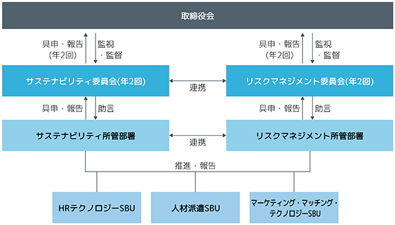
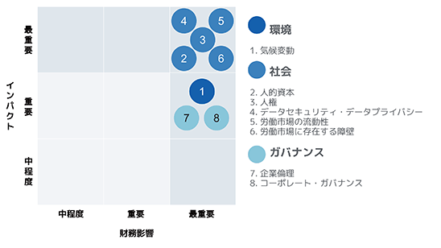
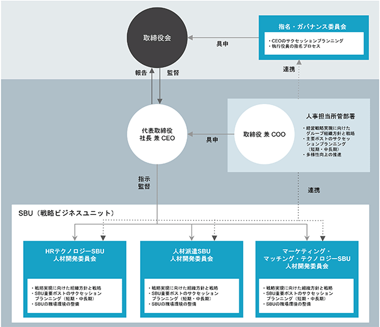
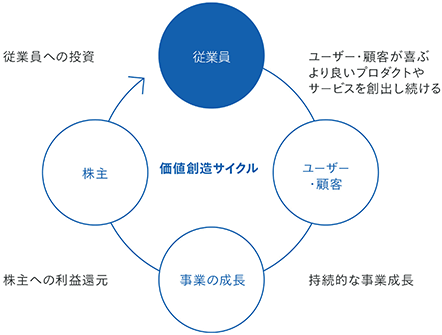
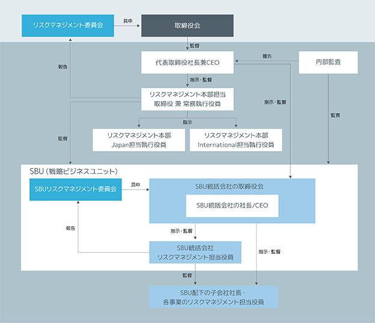

1 【経営方針、経営環境及び対処すべき課題等】
文中における将来に関する事項は、当連結会計年度末現在において当社グループが判断したものです。
(1) 経営の基本方針
ビジョン・ミッション・バリューズ
当社グループの経営理念として、基本理念、ビジョン(目指す世界観)、ミッション(果たす役割)、バリューズ(大切にする価値観)を掲げています。
当社グループは、個人ユーザーと、企業クライアントの双方に対してより多くの最適なマッチングソリューションを提供する、マーケットプレイスビジネスモデルを通してこれらの実現を目指してきました。
現在は、当社グループが培ってきた経験を活かして開発したAIを活用することで、マッチングの更なる効率性向上と高速化に注力し、個人ユーザーに対して最適な選択肢を提供し、企業クライアントに対して更なる業務効率化を支援しています。
(2) 目標とする経営指標
当社グループは、長期的な利益成長と企業価値及び株主価値の最大化に向け、新規事業投資や研究開発、M&A等の成長投資を機動的且つ積極的に実行していきます。そのための主な経営指標をEBITDA+Sと設定し、EBITDA+Sの達成度を役員の報酬に連動させることにより、株主の皆様との価値共有を促進しています。
当社グループは、テクノロジーの進化等により急速に変化する事業環境に対応し、グローバル市場におけるニーズやビジネス機会をいち早く捉え、迅速な意思決定の下で、企業価値及び株主価値の最大化に取組んでいます。
HRテクノロジー事業及び人材派遣事業が、グローバル人材マッチング市場において、またマーケティング・マッチング・テクノロジー事業が日本において、インターネット広告事業にとどまらず、AIとテクノロジーを駆使して企業クライアントの業績向上及び生産性改善をサポートするソリューションプロバイダーに進化することを目指しています。
加えて、不確実性が高まる中で持続的な企業価値向上を目指すためには、健全なガバナンスの基で、企業活動全体を通じて社会や地球環境にポジティブなインパクトを与え、すべてのステークホルダーとの共存共栄を目指す必要があると考えています。そのため、環境・社会・ガバナンスについて具体的な目標を掲げ、社内外ステークホルダーとの対話を重視しながら、その実現に向けて取組んでいます。
当社グループ全体の経営戦略と対処すべき課題は、以下のとおりです。
Simplify Hiring - 人材マッチング市場における採用プロセスの効率化
当社グループは、求人広告及び採用ツール市場、人材紹介市場、エグゼクティブサーチ市場、採用オートメーション市場及び人材派遣市場の総称を人材マッチング市場と定義し、求職者がより速く容易に仕事を得られることや、企業クライアントの採用に係るコストと時間を削減することを通じた人材マッチング市場における採用プロセスの効率化に取組んでいます。
当社は、Simplify Hiringの実現に向けて、人材マッチング市場全体をターゲットとして当社グループの人材関連事業全体で連携を更に強化し、一体的に運営することが不可欠であると考えています。Indeed PLUS、そして人材紹介事業を通じて、当社は、これらの事業を一体的に運営することで、採用効率が向上し、グローバルなHRマッチング市場に効果的に対応する能力が加速されると考えています。
当社グループは、事業を展開しているすべての人材マッチング市場において、数多くある採用プロセスを自動化し、マッチングの質とスピードの向上に取組んでいます。各サービスが持つ膨大なデータをAIや機械学習技術と組み合わせて活用することで、採用プロセスを簡素化し、求職者と企業クライアントにさらなる価値を提供することを目指しています。長期的には、ボタンをクリックするだけで完了するような、より速く効率的で、公平な求職者と企業クライアントのマッチングを目指します(注1)。
HRテクノロジー事業は、グローバルで展開する世界有数のオンライン求人マッチング・採用プラットフォームであるIndeedとGlassdoor(注2)や、日本で展開する求人配信プラットフォームであるIndeed PLUSを含む、求職者と採用企業からなるグローバル人材マーケットプレイスを運営しています。Simplify Hiring戦略推進の中心的な役割を担っており、求職者と中小企業や大企業、派遣会社といった事業規模を問わず数多くの企業クライアントのマッチングを可能にしています。
HRテクノロジー事業のオンライン求人マッチング・採用プラットフォームに掲載されている求人は、公開情報からアグリゲートされたもの、ATSを通じて投稿されたもの、企業クライアントにより直接プラットフォームに投稿されたものがあり、求人件数は2,000万件以上(注3)にのぼります。より簡単で速く、また、一人ひとりに合った求職活動を支援するため、求人情報の検索やレコメンデーション、プロフィールの作成や経歴書の掲載、キャリアアドバイス、動画や電話による面接の設定や実施等、求職活動に関わる一連のツールを提供しています。
企業クライアントに対しても同様に、AIを活用して、より簡単で速く、また、一社一社に合わせた採用活動を支援するソリューションを提供しています。HRテクノロジー事業のオンライン求人マッチング・採用プラットフォームは、求人広告の掲載や採用のための企業ブランディング等を通して、様々な求職者へのアプローチを可能にしています。また、ペイフォーパフォーマンスモデルあるいはサブスクリプションモデルのソーシング、スクリーニング、採用候補者とのやり取りや面接といった採用プロセスに係るサービスを提供することで、効率的な採用活動を支援しています。
Indeedを採用のために毎年利用する企業クライアントは350万社(注4)あり、Indeed上で作成された求職者のプロフィールは6億6,500万件以上(注5)にのぼります。
人材マーケットプレイスの効率性と有効性を高めるためには、求職者と企業クライアントをマッチングするプロセスの改善が不可欠です。そのためには、予測AIや機械学習技術を活用し、過去のデータとリアルタイムの活動情報を分析することで求職者と企業クライアントの行動を予測し、求職者には最適な求人のレコメンデーションを、企業クライアントには最適な候補者リストを提供することが必要です。加えて、この改善を可能にするためには、大規模言語モデルに基づきレコメンデーションの背景を説明するなど、新しい体験を提供する生成AIの活用によって、当社サービスの人材マーケットプレイスにおける求職者と企業クライアントとのエンゲージメントを高めることも不可欠です。
求職者がログインをしてプロフィールを作成することで、当社サービスは求職者のスキルや好みをより深く理解することができ、よりパーソナライズされた求人情報を提供することができるようになります。これにより、求職者はより良いユーザー体験を得られるだけでなく、より効率的に適切な就職の機会を見つけることができるようになります。
更に、当社サービスがマッチング成立あるいは不成立の要因を理解することも、求職者と企業クライアントそれぞれにとって極めて重要だと考えています。当社の人材マーケットプレイスでは、求職者と企業クライアントの間で、メッセージのやり取り、電話、応募書類の提出、面接の申し込みや返信のリマインド、採用オファー等のやり取りが行われています。また、外部ATSとの連携を増やすことで、更に多くのデータをIndeedプラットフォームに集約し、マッチング精度の向上に取組んでいます。マーケットプレイス上でのやり取りを、採用プロセスにおけるそれぞれのステップごとに追跡することで、求職者と企業クライアント双方の視点から、何故次のステップに進むことができたのかという貴重な情報を得ることができます。
採用プロセスの効率化の進捗度合いを表す指標は、Indeed上における1分当たりの平均採用者数(注6)であると考えています。この指標はマッチング精度の向上、採用プロセスの自動化、企業クライアントとの関係性の深化の進捗を計るものであり、これら要素の改善はさらなる採用者数の増加に繋がります。2025年の1分当たりの平均採用者数は、社内測定に基づくと31名となりました。
また、Simplify Hiringを実現することを目指し、当社グループ全体が保有する企業クライアントとの関係性、オフライン、オンラインを合わせたすべてのユニークなデータを活用したAIテクノロジーを活用し、グループの人材関連事業全体でマッチングエンジンの進化に取組んでいます。
この一例が、Indeed PLUSです。Indeed PLUSは、当社のオンライン求人マッチング・採用プラットフォームに関するテクノロジーの強みと、タウンワークやリクナビNEXTをはじめとする、日本国内のジョブボードに蓄積されたデータや知見を組み合わせた求人配信プラットフォームで、日本国内の求職者と企業クライアントのマッチングをより効率化するサービスです。日本国内のジョブボードのうち、リクナビを除くすべてのジョブボードは既にIndeed PLUS利用ジョブボードとなっています。Indeed PLUSにより、求職者はより多くの求人の中から仕事を選択することが可能になり、また、企業クライアントもより多くの候補者の中から求める人材を、より速く、効率的に採用することが可能になります。
また、人材紹介サービスであるリクルートエージェントでは、当社グループのマッチングエンジンを活用し、経歴書のスクリーニング等これまで人が手作業で行っていた工程の効率化を進めています。日本市場で60年以上人材マッチングビジネスを運営してきた当社のノウハウと、Indeedのテクノロジーや膨大な量のデータを連携させ、日本国内でのSimplify Hiring戦略を積極的に進めていきます。
更に、人材派遣事業では、当社グループが持つ独自のマッチングエンジン等のテクノロジーを活用することに注力しています。従来の人材派遣の事業プロセスにデータの活用や自動化を導入することで、企業クライアントにより良い採用体験を、派遣社員にはより良い求職体験を提供していきます。マッチングの精度とスピードを改善し、派遣社員の定着率を向上させ、手作業のプロセスを自動化することで、人材派遣市場をリードする最も革新的なプラットフォームとなることを最終目標としています。
当社は、2025年のグローバル人材マッチング市場の規模を、2024年の推測規模(注7)から微減となる3,020億米ドル程度と推計しています。この減少は主に人材派遣市場の縮小を背景としたもので、その他の市場規模は概ね横這いと推定しています。詳細は注記をご覧ください。
人材紹介市場、エグゼクティブサーチ市場、また採用オートメーション市場に含まれる社内の採用プロセスは、候補者のソーシングやスクリーニング、面接の設定、候補者の選定や採否決定のため、歴史的に手作業に大きく依存する業務プロセスであるとされてきました。当社グループはデータや自動化を活用し、これらの作業を効率化するソリューションを、業界平均よりも低価格で採用担当者や企業経営者に提供することを目指します。それによって、当社がサービスを提供する企業クライアント数を更に増やし、採用予算のうち、より多くのシェアを獲得することを目指します。
求人広告及び採用ツール市場
2025年における求人広告及び採用ツール市場の市場規模は、Staffing Industry Analysts(SIA)の推計に基づき、グローバルでの年間売上金額ベースで340億米ドル程度(注9)と推定しています。
人材紹介市場
正社員を雇用者に紹介することで手数料が発生する人材紹介市場における多くのサービスは、属人的な関係に基づく伝統的なビジネスモデルを採用しており、2025年におけるグローバルでの市場規模を、年間売上金額ベースで710億米ドル程度(注11)と推定しています。
エグゼクティブサーチ市場
管理職が対象となるような、特定の役割を担う従業員候補者のサーチに報酬が発生するエグゼクティブサーチ市場では、多くのサービスが人材紹介市場と同様に属人的な関係に基づく伝統的なビジネスモデルを採用しており、2025年におけるグローバルでの市場規模を、年間売上金額ベースで240億米ドル程度(注11)と推定しています。
人材派遣市場
2025年における人材派遣市場の市場規模は、グローバルでの年間売上金額ベースで5,220億米ドル程度(注13)、売上金額から派遣スタッフの給料や関連する費用を控除した売上総利益金額は940億米ドル程度(注13)と推定しています。
また、人材プラットフォーム(注17)、人材派遣プラットフォーム(注18)及びVMS/FMS(注19)における2025年のグローバルでの年間推定売上、並びにMSP(注20)及びRPO(注21)により代替可能な企業クライアントのリソースの年間推定金額(自動化によって得られる企業クライアントのコスト削減効果を考慮)もこの市場に含まれています。伝統的な人材派遣市場とこれらの市場の関連性及び人材派遣のサービスプロバイダーがこれらの市場のサービスの一部又は全部を提供する頻度を考慮し、当社はこれらの市場を人材派遣市場として統合することが適切であると考えています。
よって、2025年のこれらの市場規模の合計は約1,050億米ドル(注13)であると推定しています。
採用オートメーション市場
当社が既に一部で事業展開を行っている採用オートメーション市場は、2025年において、680億米ドル程度(注15)の市場規模であると推定しています。市場規模は、企業クライアントが人材採用のために社内リソースに費やしている金額を基に、その金額のうちどの程度が第三者による採用オートメーションサービスによって代替可能であるかを推定することに加え、自動化によって得られる企業クライアントのコスト削減効果を考慮した上で算出しています。更に、採用プロセスにおいて現在使用されている自動化ツールをより包括的に含めるため、この市場には、ATS市場における2025年のグローバルでの年間推定売上(注22)と身辺調査のうち、第三者によるサービスによって代替可能な社内リソースの年間推定金額(注23)も含まれます。
Help Businesses Work Smarter - 日本国内企業クライアントの生産性及び業績向上
Help Businesses Work Smarterは、マーケティング・マッチング・テクノロジー(MMT)事業が推進する、日本国内の企業クライアントの生産性及び業績向上に貢献し、その持続的な成長を実現することで、中長期的に当社の売上収益の増大を図るという戦略です。
MMT事業は、バーティカルに特化したマッチングプラットフォーム及びそれに付随する業務支援SaaSや、バーティカルを問わない業務支援SaaSのAir ビジネスツールズを提供しています。それらが構築するエコシステムで企業クライアントの事業運営に係るすべての経済活動を支える業務を循環、完結させることでこの戦略を実現します。
MMT事業のマッチングプラットフォームでは、9,865万(注1)のアカウント基盤を持つ「リクルートID」の個人ユーザーと約98万の企業クライアント(注2)の膨大なマッチングをタイムリーに創出しています。企業クライアントから業務支援SaaSを通じて連携された予約枠や、モノ・サービス等の情報に対する、リクルートIDを保有する個人ユーザーのアクション、例えば美容院の予約や新築マンションの資料請求によりマッチングが実現しています。特にMMT事業の顧客基盤の大半を占める中小規模の企業クライアントにとって、当社プラットフォームは、集客から問い合わせや予約管理、決済までを効率的に完結可能な、業務のデジタル化を実現するインフラとして貢献しています。
また、当社はマッチングプラットフォームと業務支援SaaSを通じて蓄積される、予約・決済に関するデータだけではなく、対面接客履歴といったオンライン上にない独自のデータを活用し、AIを用いたサービス内容や価格の改善提案を行います。
個人ユーザーは、「リクルートID」にアカウント登録することで、当社のマッチングプラットフォームでのアクションに応じてポイントが付与されます。このポイントプログラムの活用を促進することで、バーティカル間の相乗効果を創出しており、バーティカルプラットフォームの併用を示すクロスユース率(注3)は4分の3を超え、強固なユーザー基盤に基づくアクションを創出しています。
個人ユーザーのアクション数(注4)は、2017年度の約1.9億件から、2025年度には約4.0億件に増加しました(キャンセル除く)。今後はアクションデータやマッチングテクノロジーを駆使してマッチングプラットフォームの提供価値と利便性を向上させ、アクション数の増加を目指します。
「マッチングプラットフォームに蓄積される独自のデータを活用したAIによる改善提案」と「リクルートIDを保有する個人ユーザー基盤から創出されるアクション」を掛け合わせることにより、当社は当社マッチングプラットフォーム上でのマッチングを通じて購買に至った合計金額である流通取引総額、すなわち企業クライアントのGross Merchandise Value(GMV)の最大化を実現します。
現在は、多くのバーティカルで、企業クライアントの期待アクション数とその獲得コストに応じて月額固定で課金する「期待アクション数別プラン」を提供しています。今後は、美容分野を皮切りに、複数のバーティカルで、GMVに応じて当社が対価をいただく「GMV連動型」の収益モデルを段階的に追加していきます。こうした収益モデルの進化とAI活用によるGMV拡大を掛け合わせることで、AIの進化を企業クライアントと当社の双方の中長期的な成長をけん引する重要なドライバーとしていきます。
当社は、それぞれのバーティカルの事業環境の変化、個人ユーザーの多様化するニーズやAIの普及による情報収集や比較に関する行動変容及び企業クライアントへの提供価値の変化に対応し、各バーティカルごとにビジネスモデルを進化させます。これによりHelp Businesses Work Smarterを推進し、「日本中の企業クライアントの稼ぐ力を高める」ことで当社の売上収益増大を図ります。
Prosper Together -ステークホルダーとの共存共栄を通じた持続的な成長
当社は、企業活動全体を通じて社会にポジティブなインパクトを与え、すべてのステークホルダーと共存共栄を目指していくことが、当社の持続的な成長に繋がると考えています。当社では、不確実性が高い環境のなかで、より事業戦略とサステナビリティの取組みを一体的に推進すると共に、地域ごとの事業環境や社会課題に即して取組みを進めています。2031年3月期に目指す環境・社会・ガバナンスの目標に向けた、2026年3月期(注1)の進捗は以下のとおりです。
環境(Environment)
短期目標として定めた、当社グループの事業活動におけるカーボンニュートラルは、2022年3月期より5期連続して、2026年3月期も達成する見込みです(注2,3)。そして、2031年3月期までに目指すバリューチェーン全体を含めたカーボンニュートラル(注2,4)に向けても、SBTiの短期目標に基づいて温室効果ガス(GHG: Greenhouse Gas)排出量削減を進めており、2025年度までの目標を大幅に超えて削減する見込みです。
当社のGHG排出量の95%以上(注5)を占めるスコープ3については、パートナーと共に排出量を精緻化する取組みを進めています。一例として日本では、パートナーと連携して、システム開発プロジェクト単位でGHG排出量を算定し、その算定結果に対して第三者保証が取得されました(注6)。今後は、主要パートナーにモデルケースを展開することで、バリューチェーン全体の排出量を精緻化するとともに、削減に向けた取組みを進めていきます。
また、企業の環境に対する取組みを評価する国際的な非営利団体であるCDPにより、気候変動分野における課題解決と開示の透明性におけるリーダーシップが認められ、2023年より3年連続で、2025年も最高評価であるAリスト企業に選定されました(注7)。
社会(Social)
世界で人材マッチング事業を展開する当社グループとして、人々にとって欠かせない生活基盤である「仕事」の領域で、すべての求職者に雇用機会を提供し、就業までに掛かる期間を短縮することで社会にインパクトを創出していくために、2031年3月期に向けた2つの目標を掲げています。
1点目の2031年3月期までに「就業までに掛かる時間」を半分にする目標に向けては、Indeed上の求人における「採用までに掛かる時間」を指標として短縮に向けた取組みを進めています。2025年度にその測定方法を従来の平均値から国際的なベストプラクティスにも沿う中央値へ変更しました(注8)。そして、2025年12月時点の「採用までに掛かる時間」は30日となり、2024年12月時点から6日増加しました(注8)。これは、米国のマクロ経済環境の影響が要因の1つです。
一方で、厳しいマクロ経済環境下においても、当社の有料ソリューションやプロダクトイノベーションが「採用までに掛かる時間」の短縮に寄与することがわかっています。例えば、米国において、Premium Sponsored Jobsを利用してIndeedに直接掲載された有料求人における「採用までに掛かる時間」は、無料求人と比較して50%短いといった結果が得られています(注9,10)。
更なる「採用までに掛かる時間」の短縮に向けては、AI等を活用したプロダクトを通じて、初期段階の選考効率化、マッチングの高度化、応募後の求職者と雇用主間のやり取りの円滑化を進めています。例えば、Indeed Smart Screening機能を通じて、選考の初期段階で、雇用主が定めた要件に基づいて候補者を探しやすくする仕組みを提供しています。最終的な選考判断は雇用主が行う前提で、要件に沿った候補者を効率的に確認できるため、選考に掛かる時間の短縮につながります。本機能を提供している米国での初期テストでは、この機能を利用した雇用主の「採用までに掛かる時間」が平均20％短縮されました(注11)。
当社は、こうした取組みを通じて、求職者が就業するまでのプロセスを、より速く、シンプルに、もっと身近にするとともに、求職者と雇用主のより良いマッチングを実現することで、社会への貢献と持続的な事業成長の両立を目指していきます。
あわせて、労働市場には、ジョブマッチングの速度と精度を向上するだけでは解決することが難しい数多くの障壁が存在しています。そこで、2031年3月期までに累計3,000万人の障壁に直面する求職者の就業を実現するという2点目の目標を定め、学歴や障がい等の6つの障壁の低減に取り組んでいます。特に、学歴等の従来の形式的な要件だけでは見えにくい、仕事やトレーニング等を通じて求職者が得たスキルを基に選考する「スキルファースト採用」の拡大を進めています(注12)。
具体的には、AIを活用したJob Description GeneratorやIndeed Smart Sourcingなどの機能を通じて、スキルや経験に基づく求職者と雇用主のより適切なマッチングを支援しています。このような取組みに加えて、Opportunity@Work、国際移住機関(国連関連機関)、Hidden Disabilities Sunflowerなど世界各地の団体と連携した取組みも進めています。
これらの取組みの結果、2026年3月期までに累計で約1,880万人の障壁に直面する求職者の就業を実現しました(注13,14)。引き続き、インクルーシブでスキルファーストな採用を促進することで、労働市場の障壁の低減に取り組んでいきます。
また、当社グループでは、創業以来、従業員一人ひとりの違いを大切にし、その好奇心から生まれるアイデアや情熱に投資することで、新たな事業やサービスを生み出してきました。この考えに基づき、2031年3月期までに当社グループ全体における上級管理職・管理職・従業員それぞれでジェンダーパリティを目指す目標(注15)に向けて取り組んでいます。
グループ全体の目標達成に向けては、地域ごとに異なる課題を踏まえた取組みが重要であると考えています。例えば、ジェンダーギャップが大きい日本を中心に事業を展開する㈱リクルートでは、管理職要件の明文化等を通じて候補者拡大に取り組むとともに、コーチングメソッドを取り入れた人材育成プログラムを展開しました。これらの取組みの結果、女性管理職比率は、継続して向上しています(注16)。
ガバナンス(Governance)
当社は、経営の透明性と健全性を向上し、経営の意思決定の質を上げるためには、様々なスキルや経験、バックグラウンドを持つメンバーで取締役会を構成することが重要であると考えています。
2031年3月期までに当社の取締役及び監査役全体のジェンダーパリティを目指す目標に向けては、当社の中長期戦略の実現に向けて必要となるスキルやバックグラウンドを検討した上で、取締役候補の検討を継続しています。
(4) キャピタルアロケーション方針
当社のキャピタルアロケーションは、以下を優先順位として設定しています。
- 既存事業の継続的な成長に資する開発費用及びマーケティング費用
- 安定的な1株当たりの配当の継続的な実施
- 人材マッチング市場におけるHRテクノロジー事業を中心とした戦略的M&A
- 市場環境及び財務状況の見通しを考慮した上での自己株式取得
また、個別の投資案件の実行の是非を判断する際には、資本コストを上回るハードルレートを適用する等、資本効率を重視し、ROEを意識した経営に取組んでいます。なお、2026年3月期のROE(親会社所有者帰属持分当期利益率)は31.0%でした。
2 【サステナビリティに関する考え方及び取組】
当社は、企業活動全体を通じて社会や地球環境にポジティブなインパクトを与え、すべてのステークホルダーと共存共栄を目指していくことが、当社の持続的な成長に繋がると考えています。そこで当社では、サステナビリティに関する取組みを経営戦略の1つとして位置付け、2021年5月に「サステナビリティへの目標」として、2031年3月期(注1)に向けた具体的な時間軸と目標を定め、取組みを進めています。
なお、文中の将来に関する事項は、当社グループが本報告書提出日現在に合理的であると判断する一定の前提に基づいており、実際の結果とは様々な要因により大きく異なる可能性があります。
(1) サステナビリティ全般に対する対応
① ガバナンス
当社では、取締役会の諮問機関であるサステナビリティ委員会での審議を踏まえて、サステナビリティに関する取組みに必要な体制整備を行い、その取組みを取締役会において監督しています。サステナビリティ委員会では、サステナビリティ関連のインパクト、リスクと機会を識別・評価し、ネガティブインパクトの緩和とポジティブインパクトの拡大、リスク低減と機会獲得に向けた方針、戦略及び計画について議論し、関連する指標および目標の確立を審議します。取締役会では、その進捗とともに、対応策を含めた事業計画や投融資を確認し、これらを監督しています。
そして、サステナビリティ委員会の社内委員である各SBU統括会社のCEOを兼務する当社執行役員は、各SBUにおけるサステナビリティ戦略及び計画を策定し、事業運営の中でネガティブなインパクト、リスクを低減し、ポジティブなインパクト、機会を獲得するための取組みを進めています。
また、当社のサステナビリティに関する取組みは、サステナビリティ担当執行役員を責任者として進めています。当該責任者は、取締役会に対して、サステナビリティに関する取組みについて報告します。そして、当該責任者の配下にサステナビリティ所管部署を設置し、当社グループのサステナビリティ関連情報の収集、インパクト、リスクと機会の識別及び評価、その対応方針と戦略の検討、施策の推進及び進捗管理、ステークホルダーとの対話等を行います。
② リスク管理
当社では、毎年、サステナビリティに関するステークホルダーの関心テーマを収集し、社会潮流の変化を分析します。そして、サステナビリティ委員会において、サステナビリティ関連のインパクト、リスクと機会を識別・評価し、対応すべき課題について審議しています。また、サステナビリティ関連のリスクは、当社グループ全体のリスクマネジメントプロセスに統合して評価し、リスクマネジメント委員会において、包括的且つ一元的に管理しています。サステナビリティ関連の中長期的なリスクと機会についてはサステナビリティ委員会に委任され、具体的な議論を行います。その結果はリスクマネジメント委員会に連携され、取締役会に報告されます。
サステナビリティ関連のインパクト、リスクと機会の管理体制(役割と会議体)

サステナビリティ委員会及びリスクマネジメント委員会については、
③ 戦略
(a) マテリアリティ(重要性)評価のプロセス
当社では、サステナビリティに関する戦略の立案に向けて、サステナビリティ関連のインパクト、リスクと機会を識別・評価し、当社にとって重要性がある項目を特定しています。2026年3月期は、当社が社会や地球環境に対して与える影響(インパクト)と当社財務に対する影響(財務影響)の2軸で評価するダブルマテリアリティの考え方に基づき、以下のプロセスでマテリアリティ(重要性)の判断を実施しました。
ステップ1：サステナビリティ項目の抽出
評価対象となるサステナビリティ項目の詳細かつ包括的なリストを作成しました。リストの作成にあたっては、外部機関が定める国際基準及び業界基準(注2)を参考にしました。
ステップ2：サステナビリティ項目の評価
ステップ1で抽出した各サステナビリティ項目について、ダブルマテリアリティの考え方に基づき、インパクトと財務影響の2軸で評価を行いました。インパクトの評価においては発生可能性と深刻度(範囲・規模・是正困難度)について、財務影響の評価においては発生可能性と影響金額について、それぞれ採点を行い、採点結果を総合して優先順位付けを行いました。採点にあたっては、従業員・個人ユーザー・投資家等・NGO/NPO等の多様なステークホルダーとのエンゲージメントを通じて得たフィードバックを活用しました。また、AIをはじめとする技術革新を含む社会潮流の変化を反映すべく、国際機関やNGO/NPO等が公表している情報を参照しました。
ステップ3：マテリアリティ(重要性)の判断
ステップ2の評価結果が事業実態に即していることを、各SBU統括会社のCEO及びサステナビリティ担当役員が確認しました。その上で、社外の有識者が参加するサステナビリティ委員会での審議を経て、当社取締役会においてマテリアリティ(重要性)を決議しました。
上記の評価プロセスを通じて特定されたサステナビリティ関連の重要性があるインパクト、リスクと機会は以下のとおりです。
リクルートグループのマテリアリティ(重要性)

サステナビリティ関連の重要性があるインパクト、リスクと機会
(b) サステナビリティに関する取組
当社では、上記のマテリアリティ(重要性)評価を経て特定された、サステナビリティ関連の重要性があるネガティブインパクトの緩和とポジティブインパクトの拡大、リスク低減と機会獲得に向けて、管理体制の整備、方針策定、戦略・計画立案を推進しています。また、取締役会の諮問機関である各委員会での審議を踏まえて取組みを進め、取締役会にて進捗確認をしています。
1. 気候変動
当社は、すべての企業活動はあらゆる生命の生存基盤である地球環境が健全であってはじめて成り立つと考え、様々な活動を行っています。特に気候変動対策については重要テーマと位置づけ、当社グループ全体で温室効果ガス排出量のカーボンニュートラル達成に向けた目標を定め、サステナビリティ委員会での審議を踏まえて、取締役会にて進捗管理と議論をしていきます。当社の気候変動に対する取組みについては、本項目「(2) 気候変動への対応」をご参照ください。
2. 人的資本
当社グループでは、従業員の意欲を最大化することを改めて経営の重要テーマとし、特にインクルージョン＆ビロンギングと従業員の職場におけるウェルビーイング、内発的動機を引き出す社内環境整備と人材育成に取組んでいます。当社の人的資本に対する取組みについては、本項目「(3) 人的資本強化に向けた社内環境整備・人材育成」もあわせてご参照ください。
3. 人権
当社は、当社グループの役員と従業員、当社グループ会社の派遣サービスに登録している方々を直接の保護の対象と位置付けて「リクルートグループ人権方針」を掲げています。また、その中に個人ユーザーの人権をより尊重する方法を追求し、サービスを進化させていく方針を含めています。人権方針は、サステナビリティ委員会での審議を踏まえて、取締役会にて決議しています。
4. データセキュリティ・データプライバシー
当社は、データセキュリティ・データプライバシー対応を当社グループの重要課題と定め、保有するデータを重要性に応じて分類し、事業内容や国・地域ごとの法規制や保護すべき情報資産の特性に応じて必要な体制や施策を整備しています。また、リスクマネジメント委員会での審議を踏まえて、取締役会にて進捗確認と議論をしています。詳細は
5. 労働市場の流動性
世界で人材マッチング事業を展開する当社グループは、人々にとって欠かせない生活基盤の一つである「仕事」の領域で、すべての求職者に雇用機会を提供し、就業までに掛かる期間を短縮することで社会にインパクトを創出することを目指しています。データやテクノロジーを活用してプロダクトを常に進化させるとともに、サステナビリティ委員会での審議を踏まえて、取締役会にて進捗確認と議論をしています。詳細は
6. 労働市場に存在する障壁
当社は、労働市場には求職者と仕事のマッチングスピードと精度を向上するだけでは解決できない、多くの障壁が存在すると考え、より良い生活を支える仕事との出会いを増やすことで、より公平で持続的なソーシャルインパクトの創出を図っています。プラットフォームの進化を含む自社の施策によって障壁の低減に取り組むとともに、サステナビリティ委員会での審議を踏まえて、取締役会にて進捗確認と議論をしています。詳細は
7. 企業倫理
当社グループでは、コンプライアンスを法令遵守の枠を越えて企業と個人が適正な行動を行うことで社会的な期待や要請に応えていくことであると位置づけ、事業活動の大前提としています。企業倫理の徹底のため、従業員教育等の施策、内部通報窓口の設置を行うとともに、コンプライアンス委員会での審議を踏まえて、取締役会にて進捗確認と議論をしています。詳細は、
8. コーポレート・ガバナンス
当社は、取締役 兼 常務執行役員 兼 COOを、サステナビリティ推進を含めたコーポレート・ガバナンスの責任者と位置づけ、指名・ガバナンス委員会及び報酬委員会での審議を踏まえて、取締役会にて適切なコーポレート・ガバナンス体制や役員報酬のあり方を確認しています。当社のコーポレート・ガバナンス方針及び役員報酬については
④ 指標及び目標
当社では、2021年5月に、経営戦略の1つとして「Prosper Together - ステークホルダーとの共栄を通じた持続的な成長」を加え、地球環境や社会へのポジティブなインパクトを拡大するための具体的な指標と目標を定めた「サステナビリティ目標」を発表しました。特に、当社グループが事業として携わっている「仕事」は、人々にとって欠かせない生活基盤です。そこで、サステナビリティ目標の中では、特にS(社会)の領域で事業を通じたインパクトを創出していくことで、主要な機会の獲得を目指しています。
E：Environmental 環境
すべての企業活動は、あらゆる生命の生存基盤である地球環境が健全であってはじめて成り立ちます。当社グループでは、気候変動対策として、温室効果ガス(GHG: Greenhouse Gas)排出量の削減に取組みます。
環境に関する目標
・2022年3月期中に、当社グループの事業活動(注4)において、カーボンニュートラルを目指す
・2031年3月期までに、当社グループの事業活動を含むバリューチェーン全体(注4)において、カーボンニュートラルを目指す
また、2031年3月期までに目指すバリューチェーン全体を含めたカーボンニュートラル(注4)に向けては、2015年12月に採択されたパリ協定が求める、地球の平均気温上昇を産業革命前と比べて1.5度未満に抑えることを目指す削減水準に沿って3カ年目標(注5)を定めて推進してきました。この3カ年目標の最終年度である2025年3月期の排出量において、大幅に削減を達成し、さらなる排出量削減に向けて取組みを加速しています。また、気候変動への対策に向けて、プロダクトやサービスを通じた貢献も進めていきます。当社の気候変動に対する取組みについては、本項目「(2) 気候変動への対応」をご参照ください。
S：Social 社会
OECDの調査によると、3カ月間収入が無い状態が続くと約40%の人々が貧困に陥ってしまう(注6)ことが分かっています。そこで、働きたいのに就業できない人を無くすことを目指して、求職者と仕事のマッチングを圧倒的に速くすることで失業期間の短縮に貢献します。また、雇用市場にはマッチングの効率化だけではすぐに解決することが難しい、様々な就業への障壁が存在します。そこで、当社グループでは、テクノロジー活用とパートナーシップを通じてこの障壁を低減することで、あらゆる人々の就業機会を拡大し、その失業期間の短縮に貢献します。
ソーシャルインパクトに向けた目標
・2031年3月期までに、就業までに掛かる時間(注7)を2022年3月期比で半分に短縮することを目指す
・2022年3月期から2031年3月期までに、雇用市場にある障壁を低減することで累計3,000万人(注8)の採用を支援することを目指す
また、当社では、創業以来、従業員一人ひとりの違いを大切にし、その好奇心から生まれるアイデアや情熱に投資することで新たな事業やサービスを生み出してきました。そこで、従業員の価値創造への意欲を最大化することを改めて経営の重要テーマとし、インクルージョン＆ビロンギングに取組みます。特に、ジェンダーについては当社グループ全体で目標を定め、取組みを加速します。
従業員に関する目標
・2031年3月期までに、当社グループ全体における上級管理職・管理職・従業員(注9)それぞれにおいてジェンダーパリティを目指す
従業員に関する詳細は
G：Governance ガバナンス
経営の透明性と健全性を向上し、経営の意思決定の質を上げるために、様々なスキルや経験、バックグラウンドを持つメンバーで取締役会を構成すること(注9)が重要であると考えています。特にジェンダーについては目標を定めて取組みます。
経営体制に関する目標
・2031年3月期までに、当社の取締役会構成員(注10)のジェンダーパリティを目指す
2026年3月期の実績については、
(2) 気候変動への対応
当社では、地球環境の保全は、持続的な企業価値の向上に向けてステークホルダーと共存共栄をする上で重要な企業活動の基盤であると定めています。その上で、特に気候変動については、2031年3月期までにバリューチェーン全体でカーボンニュートラル(注1)を目指す目標を定めて、温室効果ガス(GHG:Greenhouse Gas)の排出削減を進めています。その一環として、気候関連財務情報開示タスクフォース(TCFD)提言への賛同を表明し、本項目にて、そのフレームワーク(注2)に沿って気候変動への移行計画に関する開示を行っています。
① ガバナンス
(1)で記載のサステナビリティに関するガバナンスの一環として、気候変動に対するガバナンスを行っています。責任者であるサステナビリティ担当執行役員は、取締役会に対して、気候変動によるリスクや機会の評価、リスク低減と機会の獲得方法について報告します。また、当該責任者配下のサステナビリティ所管部署において、当社グループの環境関連情報の収集、GHG排出量削減の進捗管理、気候変動によるリスクや機会の識別及び評価、その対応方針の検討及び推進、ステークホルダーとの対話や関連調査を行います。
② リスク管理
前述のサステナビリティに関するテーマの一環として、気候変動によるリスク及び機会を特定・評価し、管理しています。リスク管理に対する取組みについては、本項目「(1)サステナビリティ全般に対する対応」「②リスク管理」をご参照ください。
③ 戦略
a. 戦略の前提
当社は、気候変動によって平均気温が4℃上昇することが世界に大きな影響を及ぼすことを認識し、気温上昇を1.5℃未満に抑制することが重要であると考えています。そこで、複数の気候変動シナリオ(4℃と1.5℃)に基づき、2031年3月期までの短期・中期・長期のリスクと機会の発生可能性と財務影響を評価し、主要なリスクの低減及び機会の獲得に向けた対策を取締役会において確認しています。また、シナリオ分析においては、IPCC(Intergovernmental Panel on Climate Change)(注1)や国際エネルギー機関(IEA:International Energy Agency)等の国際機関及びそれに準ずる調査機関が発行するレポートを参照しています。
b. 気候変動による主要なリスク
当社がシナリオ分析を経て特定した主要なリスクとその発生可能性、財務影響は以下のとおりです。財務影響は項目ごとに試算しており、金額根拠の確度が比較的高いと考えられる炭素税のみ数値で示しています。
今後も、前述のガバナンス体制の下で気候変動が当社グループに及ぼす影響を注視し、継続的に評価の見直しと情報開示を充実させていきます。
c. 気候変動による主要な機会
当社グループが特定した主要な機会とその発生可能性、財務影響は以下のとおりです。
本シナリオ分析を通じて、当社が定める3つの経営戦略であるSimplify Hiring、Help Businesses Work Smarter そしてProsper Togetherを推進することが、気候変動に対するレジリエンスを高め、主要リスクを低減し、機会を獲得することに繋がることを確認しました。今後も気候変動に関する社会やステークホルダーの動向を注視し、その変化を捉えて当社グループの機会としていくことで、労働市場のレジリエンスと持続可能性の向上に貢献したいと考えています。具体的な取組みについては、本項目「(1)サステナビリティ全般に対する対応」「サステナビリティ目標」をご参照ください。
④ 指標・目標と実績
a. 指標
当社では、GHGプロトコルに則った温室効果ガス排出量(Scope1,2,3の絶対量(注1,2))を、気候関連のリスクと機会を管理する指標に定めています。
b. 目標
当社は、2021年5月に発表したサステナビリティ目標において、2022年3月期までに自らの事業活動におけるカーボンニュートラル(注1,3)、2031年3月期までにバリューチェーン全体におけるカーボンニュートラルを目指す目標を経営戦略として定めています(注2,3)。そして、カーボンニュートラルの達成に向けては、SBTi(Science Based Targets initiative)より認定を取得した以下の「1.5℃目標」(注4)に基づき排出削減を進めると共に、残存排出量のオフセットを行います。
・スコープ1＋2(注1)：GHG排出量を2031年3月期までに46.2%削減 (基準年2020年3月期)
c. 実績
当社では、2020年3月期より、GHGプロトコルに則ったGHG排出量の算定を開始し、2025年3月期の事業活動を通じた排出量(Scope1+2)は6,122t-CO2(前年比-15%)(注5)でした。このスコープ1及び2のGHG排出量については第三者保証(注6)を取得しています。また、短期目標である2024年3月期事業活動におけるスコープ1及び2のカーボンニュートラルは、計画どおり達成しています(注1,3)。
当社では、人的資本の強化を重要な企業活動の基盤として定め、持続的な企業価値の向上に向けた社内環境の整備と人材育成を進めています。
① ガバナンス
当社は、グループの基幹組織設計と主要ポストのサクセション、従業員のインクルージョン&ビロンギング向上に向けた風土醸成を主軸に人的資本強化に向けたガバナンスを行っています。経営戦略の実現に向けた基幹組織と人事については、指名・ガバナンス委員会での諮問を経て、取締役会において決議しています。また、当社グループの主要事業や機能トップといった主要ポストのサクセションに向けては、経営戦略会議の諮問機関として「人材開発委員会」を設置し、当社CEOが議長となり、戦略ビジネスユニット(SBU: Strategic Business Unit) ごとにサクセション議論とその進捗確認を行なっています。ポストごとに求める職務要件や人材要件を定め、短期・中長期の候補者を選定し、候補者の強みと課題を明らかにした上で育成計画を議論します。そして、年に1回、育成状況の進捗確認を行うことで取組みを加速しています。従業員に向けた施策については「(1)サステナビリティ全般に対する対応」「③戦略」「(b) 企業活動の重要基盤」を、また従業員については
また、取締役 兼 COOは、取締役会に対して、人的資本に関するリスクや機会の評価、その対応策を含んだ組織人事案について報告します。また、当該責任者の配下に人事所管部署を設置し、経営戦略の実現に向けて最適なグループストラクチャーや基幹人事の検討、主要ポストのサクセション、従業員のインクルージョン&ビロンギング向上に向けた風土醸成の推進等を行います。
人的資本強化に向けたグループ推進体制

② リスク管理
人的資本に関する中長期的なリスク及び機会の議論は人材開発委員会に委任され、リスク低減と機会獲得に向けた組織人事案に関する具体的な議論を行い、その結果は取締役会に報告されます。また、人的資本に関するリスクについてはリスクマネジメント委員会に連携され、取締役会に報告された上で、当社グループ全体のリスクマネジメントプロセスに統合して評価し、リスクマネジメント委員会において包括的且つ一元的に管理しています。
③ 戦略と指標及び目標
当社は、グループの基幹組織設計、主要ポストのサクセションと様々なスキルやバックグラウンドを持つ候補者の選定の方針をガバナンスした上で、事業の成功に向けては、ビジネスモデルや事業戦略と人材・組織戦略との合致(アラインメント)が何よりも重要であると考えています。そこで当社では、組織人事に関する主要な権限をSBUに移譲し、事業戦略との接続を強化しています。各SBUでは、事業成功に向けて重要な人的資本に関する指標や目標を定めて取組みを進めていますが、当社が最も重視するインクルージョン＆ビロンギングの向上については、グループで指標と目標を定めて取組みを加速しています。
a. 従業員の好奇心や情熱を最大化する
当社は、創業以来、大切にする価値観(バリューズ)として「個の尊重 - Bet on Passion」を掲げ、従業員一人ひとりの違いを尊重し、その好奇心から生まれるアイデアや情熱に投資することで、新たなサービスや事業を生み出してきました。そこで、従業員一人ひとりの好奇心や情熱こそが競争優位の源泉であると考え、個人の内発的動機を高めるための社内環境整備を行っています。
まず、個人の違いを尊重する起点として、「リクルートグループ人権方針」では、企業活動において階級や人種、肌の色、性別、言語、宗教、ジェンダー、年齢、政治的・その他の意見、国民的若しくは社会的出身、国籍、財産、性的指向、性自認、障がい、出生等を理由とした差別や人権侵害を行わないように努め、すべての人々に平等な機会を提供し、その人らしい生き方や働き方を尊重することを定めています。そして、グループ共通の課題であるジェンダーについては、経営戦略の一環として指標と目標を定め、サステナビリティ委員会での審議を踏まえて、取締役会にて進捗確認をしています。具体的な指標・目標については「(1)サステナビリティ全般に対する対応」「④指標及び目標」を、また従業員については
従業員の内発的動機の向上に向けて、当社及び主要な国内連結子会社では報酬決定の基本方針として「Pay for Performance」を掲げています。従業員(注1)に対して、年齢や入社年次、性別等に関わらず、期待される役割の大きさとそれに対する成果で報酬を決定する「ミッショングレード制」を導入しています。半年ごとに、個人の能力の見立てに基づき期待成果を定め、担う職務の価値を設定します。その職務の価値でグレード(ミッショングレード)が決定されるため、ハイプロフェッショナルを含む多様なキャリアパスにおいて、高い価値の職務を担う個人にはそれに応じた高い報酬が設定されます。これにより、スピーディーで柔軟な人材任用と、一人ひとりが能力をいかんなく発揮できる組織風土を維持・促進しており、これらは当社グループの持続的な成長を支える重要な基盤となっています。
また、当社グループでは、このような仕組みに加え、人的資本及び知的財産への投資の一環として、個人の内発的動機を最大限に引き出す組織文化の醸成に継続的に取組んでいます。その実現に向けて、例えば、当社及び国内外の主要子会社では従業員エンゲージメント・サーベイを行い、従業員のエンゲージメント向上に向けて対処すべき課題を把握し、組織風土を継続的に改善するサイクルを実施しています。
各SBUにおける組織文化の醸成に向けた取組みは以下をご確認ください。
HRテクノロジーSBU
HRテクノロジーSBUは、当社グループが保有する膨大なデータとテクノロジーを活用して、より効率的な求職活動及び採用活動を実現するためのオンライン求人マッチング・採用プラットフォームを運営しています。この事業成功に向けては、世界中から、エンジニアをはじめとした優秀な人材を獲得し、中長期的な事業価値向上に向けて従業員の意欲を高めていくことが重要です。
そこで、2021年より、役員や従業員を対象とした株式交付制度(Employee Stock Ownership Plan信託)を導入し、グローバルに展開する上場テクノロジー企業と比肩する採用競争力を確保するとともに、当社の中長期的な企業価値向上に向けた貢献意欲を高めています。また、主要子会社であるIndeedでは、従業員のパフォーマンス向上やイノベーションの促進、そしてキャリアアップの支援を目的に、様々な研修プログラムを提供しています。たとえば「Indeedスキルアカデミー」と呼ばれる学習プラットフォームを通じて、従業員は複数のメンバーから成るコミュニティにおいて同僚や専門家から学ぶ、あるいは自分のペースで学ぶ等、自分で学ぶ環境を選択し、継続して学習できるようになりました。また、「Boost Apprenticeship Program」ではエンジニア以外の従業員がエンジニア職に就けるスキルを習得することができる研修を提供しています。
従業員の働く意欲を高めるために、従業員データを活用して、採用から退職までの従業員ライフサイクル全体における従業員エクスペリエンスの向上にも取組んでいます。また、従業員主導で会社横断の課題を解決するために組成されているインクルージョン・ビジネス・リソース・グループ(IBRGs)と連携して、様々なマイノリティ従業員のエクスペリエンス改善を目指しています。
そして、様々な働き方のニーズに応えるために、従業員の健康やワークライフバランス、ウェルビーイングを高めるための制度や仕組みを整備しています。例えば、必要に応じて有給を追加取得できるオープン有給休暇制度を設定しています。また、快適な在宅勤務に向けた周辺機器の提供や、オフィスにフィットネススペースを用意する等によって快適なワークプレイスの実現を支援しています。
人材派遣SBU
人材派遣SBUは、多くの国や地域や業界で、求職者に就業機会を、企業クライアントに柔軟な労働サービスを提供し、EBITDA+Sマージンの維持改善を通じて安定的な事業運営を目指しています。この実現に向けては、対峙する地域や市場ごとに、EBITDA+Sマージンを最大化するために最適な意思決定を、柔軟且つ迅速に行うことが重要です。
そのため、SBU配下の子会社に「ユニット経営」と呼ばれる経営手法を導入しています。「ユニット経営」では、権限移譲されたユニットの長が、自分のユニットを独立した会社のように運営します。ユニットごとの自由裁量を促すことで責任者の当事者意識を高め、迅速で質の高い意思決定を促進する仕組みです。この経営手法によって、従業員は、成果に向けて意思決定をする権限を持ち、高い貢献意欲を持つとともに、リーダーとして意思決定力を高める機会を得ています。
また、多彩な意思決定ボードであることを重視し、主要ポストのサクセションプランニングではさまざまな強みをもつ候補者を確保したうえで、採用や任用を議論する仕組みを導入しています。あわせて、会社や国を超えてSBU全体で多彩なリーダーを育成するためのグローバルメンター制度を導入しています。
あわせて、国や地域を超えて主要子会社においてエンゲージメントサーベイを導入し、従業員のエンゲージメントを定点把握することで、組織風土を継続的に改善するサイクルを実施しています。
マーケティング・マッチング・テクノロジーSBU
マーケティング・マッチング・テクノロジーSBUでは、日本を主な市場として、販促オンラインプラットフォームやSaaSソリューション等を運営しています。これらの事業成功に向けては、従業員のアイデアや情熱から生まれる市場ニーズを捉えたプロダクトやサービス開発を促進することに加えて、進化を続ける個人が集まりチームとしての力を最大化することが重要です。
そこで、「価値の源泉は人」を基本方針として、年齢や入社年次、経験に関係なく従業員の可能性に期待して求める役割と報酬を決める「ミッショングレード制度」、従業員の意志を起点として仕事を通じた能力開発を行う「Will-Can-Mustシート」、組織全体で従業員の進化に向けた機会提供を議論する「人材開発委員会」、自ら手を挙げて仕事機会を獲得する社内異動の仕組みである「キャリアウェブ」、自ら発見した社会の不や違和感から新規ビジネスを創造する「Ring」、イノベーティブな仕事とナレッジを共有する「FORUM」を軸として人材マネジメントを行うことで、従業員と組織の自律的な進化を促進しています。
また、事業戦略の実現に向けては、ポストごとに人材要件を定めて人材獲得と育成を進めています。キャリア採用はもちろん新卒採用においても、ビジネスグロース、プロダクトグロース、エンジニア、データスペシャリスト、デザイン、ファイナンスといった職種別採用を行うことで、個人の志向やスキル、経験を活かした活躍を促進しています。
そして、能力開発を促進する配置やミッションアサインといったOJTと、それをサポートするOFF-JTを組み合わせて育成を進めています。OFF-JTとしては、プロダクト開発者向けのITブートキャンプ研修や、役割変更後の早期立ち上がりを支援するトランジション研修等様々なプログラムを用意しています。
あわせて、「公園(CO-EN/Co-Encounter)」をコンセプトとして、一人ひとりの好奇心や情熱を起点に組織や会社の垣根を超えた協働や協創を生み出し、価値創造につなげる場を目指しています。その実現に向け、個人とチームが自律的に生産性高く働き、創造性を最大限発揮できるように、副業兼業や再入社等を通じて社外で自己実現することも応援する環境を整備し、様々な働き方のニーズに応えています。
また、2006年にはインクルージョン推進の専門組織を立ち上げ、様々な従業員の「働きやすさ」向上に向けた制度やサポート体制の整備を進めてきました。そして、2021年からは、従業員一人ひとりの活躍を推進する「働きがい」の向上に向けて、まずはジェンダーについて管理職比率の目標を定めて取組みを加速しています。その一つである「管理職要件の明文化」では、女性と男性の両方の管理職候補者が増え、多様なリーダーが生まれる兆しが出てきています。また、エンゲージメントサーベイを含めた様々な従業員データを用いて人的資本を可視化することで、その強化に向けた取組みを加速しています。
b. 社会の「不」の解消に向けて、組織を変え続ける
また、当社では「新たな価値の創造 - Wow the World」を掲げ、社会の「不」を解消するために従業員が生み出すプロダクトやサービスを起点に、市場環境の変化にあわせて組織を変容(トランスフォーメーション)し続けてきました。当社では、従業員を起点にした価値創造サイクルを強化し、会社を変容し続ける力を経営における重要なスキルであると定め、社内・社外問わずすべての取締役会メンバーに求めるスキルとして「トランスフォーメーション」を特定しています。取締役会のスキル要件については
リクルートグループの価値創造サイクル

当社グループの人的資本については
(注1) 該当する従業員は、期間の定めの無い無期雇用の従業員及び期間の定めのある有期雇用のうち一部の雇用形態の従業員です。
3 【事業等のリスク】
(1) リスクマネジメント体制
① リスクマネジメントに関する規程
当社では、当社グループ全体のリスクマネジメントの体制を体系的に定める「リクルートグループリスクマネジメント規程」や、重大案件の迅速な報告及び情報共有を行うことを目的とした「リクルートグループエスカレーション細則」を制定し、グループ全体のリスクマネジメントを、当社グループの事業の継続及び安定的な発展を確保するために重要なものと捉えて積極的に取組んでいます。
② リスクマネジメント委員会
当社は、取締役会の諮問機関としてリスクマネジメント委員会を設置しています。当社のリスクマネジメント委員会は、当社の取締役及び執行役員が参加し、各SBUのリスクマネジメント状況のモニタリングを行い、その状況及び当社におけるリスクマネジメント状況も踏まえてグループリスクマップを基に、当社グループを取り巻くリスクについての包括的な議論を行っています。その上で、当社のリスクマネジメント委員会においてグループトップリスクを選定し、その対応策やモニタリングの方針を決定しています。
③ 当社及びSBUにおけるリスクマネジメント体制
当社は、取締役 兼 常務執行役員を、リスクマネジメント本部担当として配置しています。当社は、リスクへの対応のポイントが日本と海外とで差異があると考えていることから、リスクマネジメント本部配下にJapan担当とInternational担当の執行役員を配置し、それぞれの特性に応じて、グループトップリスクへの対応を行っています。加えて、当社の内部監査所管部署においてグループトップリスクへの対応状況の業務監査を円滑に実施することができるよう、当社のリスクマネジメント所管部署は当社の内部監査所管部署とも適時に情報共有を行い、連携をしています。
また、SBUにおけるリスクマネジメント体制は以下のとおりです。
a. SBU統括会社では、当該SBUにおけるリスクマネジメント担当役員を任命し、当該SBUにおける子会社の事業に関連するリスクマネジメントの状況のモニタリングを行っています。これに加え、SBU統括会社は、それぞれSBUリスクマネジメント委員会を半期に一度開催し、SBUを取り巻くリスクを包括的に確認して議論を行うとともに、SBUのトップリスクの選定と対応策の決定を行い、それらのリスクの状況のモニタリングを行っています。
b. SBUリスクマネジメント委員会には当社のリスクマネジメント本部担当取締役 兼 常務執行役員も参加し、SBUにおけるリスクマネジメント状況を確認しています。各SBUの子会社においては、リスクの洗い出しや重要性の判断、対応策の実施等、リスク管理を実施することとしています。
当社のリスクマネジメント委員会の事務局を担うリスクマネジメント所管部署は、これらのリスクマネジメント活動について、定期的に当社の取締役会に報告し、取締役会が当社グループを取り巻くリスクの状況や対応状況について、適切にモニタリングできる体制を整えています。
当社グループのリスクマネジメント体制図

(2) 当社グループのトップリスクと主な対応策
当社グループの財政状態、経営成績及びキャッシュ・フローの状況(以下「経営成績等」)に影響を及ぼす可能性のあるリスクのうち、当社の取締役及び執行役員が特に注力して対応が必要であると認識するグループトップリスクとそれに対する主な対応策は以下のとおりです。
このリスクについての詳細な説明は、本項目「(3) 当社グループの経営成績等に影響を与える重要なリスク」「 ⑨データセキュリティ・データプライバシーに関連するリスク」をご参照ください。
(注) 上記は、本報告書提出日時点において、グループトップリスクによる、当社が想定する当社グループの経営成績等への影響を低減するために有効と判断した対応策のうち主要なものを記載したものです。しかし、人為的なミスや内部者の意図的な行為により情報漏洩が発生する場合、オンラインで提供するプロダクトやシステムに重大なバグや欠陥が生じる場合等、上記の対応策が奏功しない可能性があり、また、係る対応策を有効に実施したとしてもリスクが一切消滅することを保証するものではありません。更に、将来データプライバシーの保護に関する法令等が改正され、又は新たな不正アクセス方法やコンピュータウイルスが開発される等により、リスク自体の重要性や内容が変化し、又その対応策の有効性が低下する可能性があります。
(3) 当社グループの経営成績等に影響を与える重要なリスク
上記の当社グループトップリスクを含む、当社グループの経営成績等に影響を与える可能性があると当社の経営陣が認識するリスクの詳細は以下のとおりです。但し、すべてのリスクを網羅したものではなく、現時点では予見出来ない又は重要とみなされていないリスクの影響を将来的に受ける可能性があります。
なお、文中における将来に関する事項は、別段の記載がない限り、当連結会計年度末現在において当社グループが判断したものです。
当社グループの経営成績等に影響を与える重要なリスク一覧
① 景気の動向等のマクロ環境に関するリスク
当社グループの業績は、一般的に日本、米国、欧州及び豪州を中心とする各国の景気等の経済情勢、社会情勢及び地政学的状況に影響されます。特に、HRテクノロジー事業及び派遣事業で構成される人材マッチング事業は、経済情勢の不透明感又は悪化に伴う企業の雇用環境の変化の影響を受けます。また、マーケティング・マッチング・テクノロジー事業においても、経済情勢等の変動により個人ユーザーの消費が低迷すること等に伴って、企業クライアントが広告宣伝費を削減する可能性があります。
近時の急激な物価上昇や日本における長期的な少子高齢化及び総人口の減少、長期間にわたった日本銀行によるマイナス金利政策の終了などの金融政策の変更、米中間の政治的経済的対立や米国による対外政策・経済制裁を含む通商・安全保障政策の動向、米国における関税政策、移民政策の転換、DEI政策の変化等、当社グループが事業を展開する各国の経済情勢の不確実性が高まっていることや、原油価格の高騰を引き起こしている中東情勢の悪化と長期化、エネルギー価格の大幅な上昇や金融市場の変動を引き起こしているロシア・ウクライナの軍事衝突の長期化、及びそれに関連して実施されているロシアへの国際的制裁措置の影響、中国経済の先行き不透明感、台湾・北朝鮮及びパレスチナ情勢を含む中東諸国の地政学的リスクの増加等、グローバルの経済情勢等が及ぼす影響も懸念されます。経済情勢等の停滞・悪化や新たな感染症の拡大により当社グループのサービスに対する需要が低迷する場合には、当社グループの経営成績等に影響を与える可能性があります。
HRテクノロジー事業においては、企業クライアントの採用需要の低下が見られる場合、同事業の業績に影響を与える可能性があります。足元では、米国において、採用数と離職数が共に歴史的な低水準で推移する「低採用・低離職」の状況が定着し、企業の採用意欲は慎重になっています。米国外の多くの地域でも求人数は緩やかに減少しており、今後係る傾向が継続する場合、長期間に亘り同事業の業績に影響を与える可能性があります。
日本における人材派遣事業については、当連結会計年度において派遣労働者受入れの需要が増加傾向にありました。一方で、欧州、米国及び豪州については、不透明な経済状況を背景に派遣労働者受入れの需要が低下していますが、当連結会計年度の下半期においては、特定の地域や職域において売上収益に回復の兆しが見え始めています。依然として経済環境は不透明であり、当該回復が継続するかは予断を許さない状況にあります。今後係る傾向が継続したり、日本においても同様の傾向が見られる場合には、売上収益が減少し、当社グループの経営成績等に影響を与える可能性があります。
また、マーケティング・マッチング・テクノロジー事業においては、住宅ローンに係る日本国内の金利の変動や、旅行、外食等日常的な消費活動に対する根本的な意識の変化が生じる等、これらのサービスの需要が変化する場合に、同事業の業績に影響を与える可能性があります。企業クライアントによる広告出稿の停止が継続したり低価格プランへ移行する傾向が継続する等の場合、また、企業クライアントの売上収益自体が減少する場合に、当社の売上収益が減少し、当社グループの経営成績等に影響を与える可能性があります。
② 競合に関するリスク
当社グループの各事業が事業展開を行う市場には、複数の競合他社が存在する上、参入障壁が必ずしも高くない事業も存在するため、他業種の事業者等を含む新規参入者による市場への新規の参加が比較的容易であり、競争はより激しくなる傾向にあります。これらの市場の中には、テクノロジーの重要性が高く、テクノロジーの進歩が非常に速いものがあるため、当社グループが技術革新に対応できない場合や競合他社が技術革新に成功した場合、業界の動向が一変し、当社グループが大きく市場シェアを失う可能性や当社グループの将来の事業展開が著しく困難となる可能性があります。
これらの市場においては、ブランド・ロイヤリティ、法規制及び大きな資金力や既存の顧客基盤等により競争上の優位性を維持することが必ずしも容易ではありません。当社グループの競合他社の中には、グローバルに事業展開を行う巨大テクノロジー企業を中心に、テクノロジー、ビジネスモデル、資金力、価格競争力、グローバル又は特定の地域における認知度、既存ユーザー層の厚さ、クライアントとの関係、人材の確保、独自のサービス及び営業・マーケティング力それぞれの点において、現在当社グループより優位に立つ事業者も存在します。このような競合環境において当社グループが競争力を維持できない場合、当社グループの経営成績等に影響を与える可能性があります。
更に、当社グループが、個人ユーザー及び企業クライアントのニーズ又は嗜好の変化等に対応できないこと、その提供するサービスの機能向上を図れないこと、当社グループの提供するサービスについて競合他社との十分な差別化を図れないこと、競合他社が当社グループより低い価格で同水準のサービスを提供すること、競合他社が個人ユーザーの嗜好にあったサービスを導入すること、競合他社間が合併・統合等により競争力を高めること及び規制環境の変化等に対応できないこと等によっても、当社グループの競争力を維持できなくなる可能性があります。また、企業クライアントが自らユーザー基盤を確立し、当社グループのサービスを利用しなくなる可能性もあります。
当社グループは、特に日本では、マーケティング・マッチング・テクノロジー事業の多くの主要事業において既に高い市場シェアを獲得しているため、それらの領域において更なる成長を達成する難易度は高く、クライアントが当社グループに支払う広告宣伝費を維持又は増加できない場合や、当社グループが過去に取引実績がなかったクライアント等に対する新規開拓が進まなかった場合には、当社グループが持続的な成長を達成することは困難となる可能性があります。仮に当社グループが市場シェアを維持又は増加するために価格を下げ、又は新サービスを導入する場合には、当社グループの事業の収益性が低下する可能性があります。
③ 個人ユーザー・企業クライアントのニーズの変化に関するリスク
当社グループが競争力や市場シェアを維持するためには、個人ユーザー及び企業クライアントのニーズの変化に対応する必要があります。また、昨今、従来のマスメディアによる情報発信だけでなく、インターネット・SNS(ソーシャルネットワーキングサービス)等により、リアルタイムでの情報発信が行われていることや、技術革新により多様なサービスが比較的少額の投資で短期間に個人ユーザーに普及し得ること、新たなデバイスや技術の普及によりユーザー・エクスペリエンスが大きく変わり得ること等により、個人ユーザーのニーズの移り変わりや、これを受けた企業クライアントのニーズの変化は非常に激しくなっています。
また、HRテクノロジー事業やマーケティング・マッチング・テクノロジー事業においては、当社グループのオンラインプラットフォームへの広告出稿が売上収益の多くを占めますが、一部のサービスにおいては企業クライアントのニーズに即するために出稿期間を短期に設定することも可能であるため、当社グループのサービスを継続的に使用しない可能性や、他のプラットフォーマーへの乗り換えが容易になる可能性があります。
当社グループがこのような個人ユーザー及び企業クライアントのニーズの変化を的確且つ迅速に把握できない場合や、個人ユーザー及び企業クライアントのニーズに対応する当社グループのサービスの適切なタイミングでの改良又は開発及びサービスの提供ができない場合並びにこれらのニーズにより合致したサービスが他社により新たに開発された場合、個人ユーザー及び企業クライアントそれぞれのニーズと利害のバランスの取れたサービスを提供することができない場合には、個人ユーザー及び企業クライアントが当社グループのサービスから離れ、当社グループの市場シェアの縮小や売上収益の減少、又はそれに対応した値下げ等による利益率の低下、係る利益率の低下に対応するためのビジネスモデルの改良又は開発が成功しないこと等により、当社グループの経営成績等に影響を与える可能性があります。
④ 技術革新によるリスク
テクノロジー業界においては、技術革新のサイクルが極めて速く、競合他社が使用するテクノロジーが個人ユーザー及び企業クライアントのニーズに影響することから、当社グループが競争力を維持するためには、将来における技術革新を予測して、新たなテクノロジーへの投資と導入・事業化を継続的に行う必要があります。さらに、近年AIや機械学習等の新技術が急速に進化していることを認識しています。AIを含む技術革新に関しては、以下のような様々なリスクが伴います。
・当社グループが技術革新や業界標準技術のトレンドを正確に予測することができず、結果として当社グループが採用又は開発した新技術等が、そもそも事業化できない、又は使用可能となってもその時点では陳腐化、競争力低下等が生じているリスク
・高度な専門性や斬新なアイデアを創出する技術者又はマネジメントを確保又は育成できない、又は係る技術者の確保又は育成に多額の費用が発生するリスク
・技術革新に対応するために必要なシステム・技術インフラを維持又は更新できない、そのために多額の費用が発生する、又は適切なシステム・技術インフラの取捨選択に失敗するリスク
・6G等の新たな通信技術や端末や業界標準技術の多様化及び進化に対応した改良が適時に行えない、又は既存のシステム又は設備等の改良や新たな開発等により多額の費用が発生するリスク
・AIや機械学習等の新技術を適用した商品又はサービスに、想定していないバグ、欠陥又は不備が発生し、法的・社会的基準から逸脱するコンテンツを生成した結果、当社グループのブランドの価値及び信用が毀損するリスク
・AIや機械学習等の新技術をいち早く開発・導入した企業や、新技術をより効果的に利用する企業との間で新たな競争が生じるリスク
・個人ユーザー及び企業クライアントにとって利便性の高い汎用的なAIの普及により、当社グループのサービス(外部事業者の提供するAIツールに依拠したサービスを含む)の利用者が減少する又はサービス自体が代替されるリスク
これらの各要因により、当社グループが追加の費用の支出を余儀なくされ、又は技術革新に対応することが困難となる場合、個人ユーザー及び企業クライアントが当社グループのサービスから離れ、当社グループの経営成績等に影響を与える可能性があります。
⑤ 事業戦略に関するリスク
当社グループは、急速に変化するインターネット事業環境等に対応し、グローバル市場におけるニーズやビジネス機会をいち早く捉え、迅速な意思決定の下で、企業価値及び株主価値の最大化に取組むため、事業価値の拡大に取組んでいます。
各事業においては、広範で地理的にも多様な事業ポートフォリオの構築を通じた持続可能な成長を志向していますが、このためには既存事業の拡大に加え、戦略的な提携や買収の慎重な実施を含む新規事業への参入が必要です。しかし、変化が極めて速く不確実性の高い事業環境において、将来の業績や市場環境の正確な予測及びこれに基づく有効な戦略の策定は極めて困難であるため、当社グループの予測や各種施策が有効であるとの保証はなく、また、以下に記載するリスク要因を含む様々なリスク要因が存在するため、当該事業戦略が当社グループの将来の業績の向上につながらない可能性や、将来において当該事業戦略の変更を余儀なくされる可能性があります。
HRテクノロジー事業
Indeedを中心に買収等の成長投資による事業規模の拡大を含め、グローバルHRマッチング市場での持続的な成長を企図しています。しかし、当社グループの成長は経済全体の成長及び雇用状況に大きく依存しています。加えて、売上収益の成長性は、顧客層の拡大、有料求人広告数の増加、採用プロセスの自動化を通じた収益性の向上に影響されます。また、人材マッチング市場の中で、HRテクノロジー事業が市場シェアを拡大できるかにも影響されます。
また、当社の採用オートメーションに係るサービスは、企業クライアントの採用オートメーションの活用に対する意欲が当社の予想を下回るといった、様々な要因により、当社が現在想定している速度で成長しない可能性があります。
また、テクノロジーの進化に伴い個人ユーザーや企業クライアントが新たに抱える課題(AIやbotを利用した大量の求人応募による企業クライアント側の負担増等)への対処が遅れる可能性があり、米国においてはこのような課題に対処するためにAI等の新しいテクノロジーを用いること自体が、規制上の監視および訴訟リスクにさらされています。これらに加え、当社グループによる新しいテクノロジーの導入や活用の遅れ、人材市場における個人ユーザー及び企業クライアントのニーズの急激な変化、テクノロジーの進化に伴う新たな法規制の導入や競争環境の激化等により、当社グループが事業機会を捉え収益化することができない可能性があります。
人材派遣事業
グローバルレベルで事業の収益性の向上を図ります。しかし、当社グループが事業展開する主要な法域における法規制の強化等により、収益性が想定どおりに向上しない又は悪化する可能性があります。
マーケティング・マッチング・テクノロジー事業
主に日本国内の企業クライアントを対象に、テクノロジーやデータを駆使したオンラインプラットフォームや業務・経営支援ツールであるSaaSの提供等を行っています。
しかし、当社グループが新規の個人ユーザー及び企業クライアントを獲得できない、又は競合他社よりも魅力的・革新的なサービスを提供できないことにより、当社グループが提供するオンラインプラットフォームやSaaSが個人ユーザー及び企業クライアントに採用されない若しくは採用されるために多額の費用を要する可能性があります。
また、人材マッチング市場においては、市場における当社グループの存在感の拡大を目指して投資を行います。現在、当社グループは、HRテクノロジー事業及び派遣事業において人材マッチング事業を展開していますが、求人広告及び採用ツール市場、人材紹介市場、エグゼクティブサーチ市場、人材派遣市場並びに採用オートメーション市場において、テクノロジーの活用により業務プロセスを自動化・効率化し、より費用対効果が高くより高い生産性をもたらすマッチングソリューションの拡大を続けることを目指しています。
しかし、係るソリューションの開発や導入ができない可能性や人材市場の急激な変化に対応できない可能性、当社グループのソリューションが市場に受け入れられない可能性、係るソリューションの提供に必要な投資を回収できない可能性があります。
更に、当社グループは、人材マッチング市場において、従来の人的作業によらずに先端的なテクノロジーや大量のデータ、エージェンティックAIを駆使して、企業クライアントの採用活動を自動化するという長期ビジョンを掲げていますが、効率的なソリューションが開発できない、係るソリューションの収益化のための需要が足りない、又は法令による規制等により、当社グループが当該長期ビジョンを達成できる保証はありません。また、業務プロセスの効率性を高めるソリューションを提供していくことにより、当社グループが運営している人材紹介や人材派遣等の既存事業と、新規に開始又は拡大する事業が競合関係になる場合、当社グループの既存の事業の収益性が低下する可能性があります。
当社は社外の第三者のデータ及び独自の市場調査及び仮定に基づき、当社の事業が展開可能な市場に関する市場規模を推定しています。しかし、いかなる推定も、確実に実現可能であることを示すものではありません。特に、採用オートメーション市場に関しては、当該市場がいまだ形成途上にあるため、係る市場における事業機会を推定することが困難です。その結果、当社事業の成長機会が想定を下回る可能性があり、係る成長機会を追求するために結果として誤った資源配分を行う可能性があります。
加えて、新規事業の展開全般については、当社グループが新規に開始し又は拡大した事業に対する個人ユーザー及び企業クライアントのニーズが想定を下回り又はその嗜好や需要が変化した場合、新たな国又は事業への参入やそのための人材確保・育成に要する費用が想定よりも増加する場合、当該市場での競争が激化した場合、個人ユーザーに対する訴求力や取引する企業クライアント数を増加させるための施策が不十分である場合等には、既存事業の拡大や新規事業の開発のための投資に見合った収益を得られない可能性があります。
逆に、当社グループが新規に開始し又は拡大した事業が当初期待していた効果をあげることができなかった場合や当該事業の成長余力が低いと判断した場合には、これらの事業の撤退や事業の縮小を行うことにより、費用又は損失が発生し、当社グループの経営成績等に影響を与える可能性があります。また、これらの事業についての撤退や縮小についての判断が遅れた場合には、損失の計上が長期化し、また、撤退等に要する費用や損失が増加する可能性があります。
⑥ 買収・投資活動等に伴うリスク
当社グループでは、長期的な利益成長の実現に向け、海外での事業展開、新規ユーザーの獲得、新規サービスの展開、既存サービスの拡充、関連技術の獲得等を目的として、買収や出資、協業・提携を機動的且つ積極的に実行しており、今後も、将来の当社グループの業績や企業価値の向上に貢献すると判断した場合には、これらを実行していきます。
買収や出資における対象会社の選定においては、対象会社の事業計画とそのリスク等を予測して行いますが、これらの予測を誤る場合には、買収した企業が期待された収益やシナジーを生み出さず、当該買収等により生じた投資の回収に想定以上の期間を要する可能性や、投資の回収を図れない可能性があります。
特にテクノロジー企業の買収や出資については、対象会社のテクノロジーが初期段階に留まることや技術革新が急速に発生し得ることから、係る買収・出資においては、上記のリスクはより高まる可能性があります。加えて、適切な対象企業又は合弁パートナーを見つけることができないこと、受入可能な取引条件を交渉・合意できないこと、買収資金を調達できないこと、必要な同意や許可等を取得できないこと、法令上の問題を解決できないこと等の理由に基づき、買収、合弁事業その他の提携行為を行うこと自体ができない可能性があります。
この他、革新的なテクノロジーや人材の獲得等を目的に、社歴が浅く経営管理体制が不十分な企業を買収する場合や、利益を計上していない企業を買収する場合、十分なデューディリジェンスが実施できない場合には、想定していなかった又は想定していた金額以上の債務の存在やコンプライアンス上の問題点が買収後に判明する可能性があります。
また、当社グループが対象企業の支配権を有しない案件においては、出資先の経営に対して十分なコントロール又はモニタリングができない可能性や、事業開始後に経営方針の相違等から期待した収益が得られない可能性があります。
更に、買収や協業・提携の実施には、事業・テクノロジー等の統合や期待したシナジーの実現が困難となる可能性や多額の費用が発生する可能性、協業先・提携先に対して、当社グループの保有するノウハウやマネジメント・人材・取引先が流出する可能性、各国における法規制、労使関係、文化、言語等の違いや政治・経済情勢により買収等の実施又はその後の対象会社の経営が困難となる可能性、買収や投資のために借入が増加する可能性があります。
また、将来的に各合弁パートナーとの間で何らかの理由により協業・提携関係に支障をきたすような事態が発生した場合、当該事業の経営成績等に影響を与え、又は当該事業の継続が不可能になる可能性があります。当社グループのHRテクノロジー事業においては、革新的なテクノロジーや人材の獲得を目的に、比較的社歴の浅く利益を計上していない企業の買収・出資が増加することが見込まれますが、係る買収・出資においては、上記の各リスクはより高まる可能性があります。
⑦ グローバル展開に伴うリスク
当社グループは、米国、欧州、豪州及びアジア諸国等多くの国と地域で事業を展開しています。
当社グループがこれらの多様な国と地域で事業を展開する上では、又は既に事業を展開していた国と地域以外にも新たに事業を展開していく上では、各国・地域の政治情勢、経済情勢、法規制、税制、当局による監督、商慣習及び文化の差異、個人ユーザー及び企業クライアントの嗜好、インターネット・モバイル機器の普及状況、労働問題、言語の差異、国際関係の悪化、訴訟の多発、外資規制、人材確保の困難性、海外における当社グループの知名度の相対的な低さ、多様な国・地域における事業のモニタリングの困難性等、事前に想定することの困難な様々な課題に対応する必要があります。
これらの課題に適時適切に対応できない場合、各国・地域の事業展開において当社グループが期待する成果を上げられず、当社グループの経営成績等に影響を与える可能性があります。
⑧ 人材確保・労務環境リスク
当社グループが、競争上の優位性の確保、事業環境の変化への対応又は持続的な成長を可能とするためには、マネジメント・技術・営業等の様々な分野において優秀な人材を確保し且つ育成する必要があります。近年、特にHRテクノロジー事業及びマーケティング・マッチング・テクノロジー事業において、AIの領域を含む優秀なIT技術者の確保及び育成が重要となってきていますが、係るIT技術者の確保又は育成ができない場合や優秀な人材を確保するため従業員の報酬・賃金水準が上昇する場合には、当社グループの経営成績等に影響を与える可能性があります。
また、マネジメントや技術者を含む重要な人材が競合他社等に流出した場合や、当社グループが想定するよりも多くの離職が生じ、新たな人材を確保できない場合には、当社グループの競争力や社会的信用が悪化し、経営成績等に影響を与える可能性があります。
また、労働人口の減少等により従業員の採用・育成が厳しい状況に陥った場合、採用コスト・人件費の増加や、人材確保に向けた戦略に重大な影響を及ぼす可能性があります。
当社グループが良好な職場環境やリモートワーク等、従業員にとって柔軟な職場環境を整備できない場合には、優秀な人材の採用や確保に影響を及ぼすことやイノベーションを阻害すること等により、当社グループの経営成績等に影響を与える可能性があります。
更に、当社グループの人材派遣事業においては、当社グループが派遣する社員が安全且つ衛生的に働ける職場環境が派遣先において整備されていない場合、派遣社員の心身の健康や安全が損なわれ、当社グループの経営成績等やブランド及び社会的信用に影響を与える可能性があります。
⑨ データセキュリティ・データプライバシーに関連するリスク
当社グループは、その事業の運営に際し、個人ユーザー又は企業クライアントその他の関係者の個人情報及び機密情報を大量に保有しています。当社グループによる個人情報の取扱いについては、日本における「個人情報の保護に関する法律」(以下「個人情報保護法」)、欧州連合(EU)の「欧州連合一般データ保護規則」、米国カリフォルニア州の「California Consumer Privacy Act」(「California Privacy Rights Act」による改正部分を含む)等、各国・地域の個人情報に関する法律が適用されます。
これらの法規制の中には、データセキュリティシステムが不十分であることが判明した場合に、データの流出について重大な制裁金や直接責任を課すものがあります。また、これらの法規制は、法域ごとに異なるものとなる可能性や、近年の個人情報及び機密情報の管理に対する意識の高まりから内容が複雑化しており、その遵守や事業運営のための費用が増加する可能性があります。更に、これらの個人情報等の取扱いに関する法規制には、制定又は施行されてからの期間が短いため当局の解釈及び運用が必ずしも明確でないことがあり、係る解釈や運用によっては、当社グループの従来の情報の取扱いと整合しない可能性があります。
一方で、当社グループの事業において個人情報や機密情報等を含むデータやそれを管理・運用するテクノロジーの重要性は高まる傾向にあり、当社グループのサービスにおけるデータの運用が意図せず法規制の違反や個人ユーザー又は企業クライアントの不利益又は不信感を招き、当局から業務停止命令、罰金その他の処分を受ける可能性、個人ユーザー又は企業クライアントから訴訟を提起される可能性や当社グループのブランドの価値及び信用が毀損する可能性があります。
また、個人情報等の取扱いに関する法規制が今後より厳格となる場合又は当社グループが法規制の違反若しくは社会的な意識の高まりその他の理由に基づき個人情報や機密情報等の管理・運用に関する当社グループの方針の変更を余儀なくされる場合には、情報の活用に対する制約が増すことにより、当社グループのサービスの品質が低下し、個人ユーザー又は企業クライアントが減少する可能性や、多種且つ大量の個人情報を用いて事業を展開する当社グループの優位性が失われ若しくは経営戦略の見直しを迫られる可能性があります。
更に、第三者によるセキュリティ侵害、ソフトウエアのバグ、ハッキング、従業員の故意又は過失等によって、当社グループが保有する個人ユーザー又は企業クライアントその他の関係者の個人情報や機密情報の外部流出又は不正使用等が発生した場合、当社グループは個人ユーザーや企業クライアント等に対する損害賠償責任を負うとともに、当局から業務の停止につながり得る行政処分等を受ける可能性がある等、当社グループの事業、社会的信用及び経営成績等に影響を与える可能性があります。
⑩ 情報システムに関するリスク
当社グループでは、システムトラブルの発生可能性を低減するためのシステムやセキュリティの強化等の対策を行っていますが、その事業の運営において情報ネットワーク及びコンピュータシステムを多岐にわたり使用しているため、災害・事故等による通信ネットワークの障害、ハードウエアやソフトウエアの欠陥や事故によるシステム障害、過失や妨害行為、コンピュータウイルスや第三者による不正アクセス等のサイバーアタックが生じた場合、システムや通信ネットワークが使用できなくなることや、当社グループが保存する当社の個人ユーザー又は企業クライアントの個人情報及び機密情報が喪失又は流出することにより、当社グループの事業運営、社会的信用及び経営成績等に影響を与える可能性があります。更に、業界全体の脆弱性が、当社の事業及び経営成績等に影響を与える可能性があります。
また、当社グループのマーケティング・マッチング・テクノロジー事業においては、企業や店舗で必要な会計・決済等の機能に関するクライアントの経営・業務効率を改善するサービスとして、Air ビジネスツールズ等のSaaSソリューションを提供していますが、これらのシステム障害等やサービスの中断等が発生した場合には、当社グループがこれにより個人ユーザー又は企業クライアントに対する損害賠償責任や補償金の支払い等を負担する可能性があることに加え、当社グループが提供するサービスへの信頼喪失を招き、当社グループの事業及び経営成績等に影響を及ぼす可能性があります。
また、当社グループは、システムの運用やメンテナンス等の一部を第三者に委託し、それらへの依存度が増加していくことが予想されるため、システムの不具合等について当社グループ自身で対処できない可能性が高まりつつあります。更に、情報インフラの構築、運用、拡張に係るシステム投資や維持費用が将来大幅に増加する可能性もあります。
⑪ 当社グループが提供するアプリケーションの欠陥等によるリスク
当社グループは、様々なサービスをアプリケーション等のソフトウエア及びデバイスを通じて個人ユーザーや企業クライアントに提供しています。これらの開発過程において検証やテストを実施し、動作確認には万全を期していますが、サービス提供開始後に、ソフトウエアやデバイスに重大なバグや欠陥が発生し、当社グループのサービスの一部又は全部を正常に提供することができない可能性、個人ユーザーや企業クライアントのデータの消滅や書換えその他係るデータを適切に保護できない可能性、第三者によるデータの不正入手、取引停止等が発生する可能性があります。
また、当社グループの提供する一部のサービスにおいては、オンライン上でのユーザー獲得、オンライン予約管理、POSレジ、決済等のクライアントが事業を運営する上での主要な機能全般をカバーするため、アプリケーションの欠陥等が発生した場合、クライアントに重大な損害が生じる可能性や、個人ユーザー又は企業クライアントの機密情報や個人情報が喪失又は流出する可能性があります。
これらの影響により、当社グループに対する訴訟や損害賠償請求が提起され、又は行政処分が課される等、当社グループの事業、社会的信用及び経営成績等に重大な影響を及ぼす可能性があります。
⑫ 法規制に関するリスク
当社グループは、自らが事業を展開する国又は地域の法令等を遵守する必要があります。個人情報保護、データ保護、電気通信、消費者保護、労働及び職業紹介・人材派遣関連法令、人権、反贈収賄、税務、競争関連規制(独占禁止規制)等、当社グループに適用される法令等に違反した場合、当社グループの事業運営、業績及び社会的信用に重大な影響を及ぼす可能性があります。また、一定の事業を行う上では各国・地域の許認可等を取得するとともに、当局の監督を受けることがありますが、当社グループが係る許認可等を失い又は当局から業務停止命令、罰金、その他の処分を受ける場合には、対象事業を営むことができなくなる可能性があります。
更に、将来当社グループに適用される法令等の新設又は改正、司法・行政解釈等の変更がある場合、複雑化する法規制への対応の遅れや、それにより当社グループが事業機会を逸する可能性や、当社グループの事業運営、社会的信用及び経営成績等に影響を与える可能性があります。また、近時、企業と人権問題に関する活発な議論がなされていますが、当社グループが人権に関する法令に関して適切に対応できない場合、当社グループのブランドに影響を与える可能性があります。
当社グループの事業に適用される法令等には、主として以下のものがあります。
HRテクノロジー事業
HRテクノロジー事業は、米国の「Communications Decency Act」、「California Consumer Privacy Act(「California Privacy Rights Act」による改正部分を含む)」、「Telephone Consumer Protection Act」、「Wiretap Act」、「Stored Communications Act」、「Fair Credit Reporting Act」、その他類似の法規制(バイオメトリクスに関するものも含みます。)、EUの「欧州連合一般データ保護規則」、「デジタルサービス法」、「デジタル市場法」、日本の「個人情報の保護に関する法律」や「職業安定法」、英国や他の国の類似の規制の適用を受け、又は受ける可能性があります。当社グループが、職業安定法等に違反した場合には、事業に必要な許認可が取り消されたり、業務停止命令や業務改善命令を受ける可能性があり、また、関連法令の改正により、当社グループが受け取る手数料に変更が生じる場合があります。加えて、オンライン求人マッチング・採用プラットフォーム及び求人配信プラットフォームサービスを提供する当該事業は、各国の競争関連規制の適用を受けるため、当社グループのルールに基づき、どの企業に対して、当社グループのサービスを利用させるかの判断に関連して、優越的地位の有無や当該地位の濫用について調査対象となり、濫用と判断された場合に罰金が課せられる可能性があります。
また、EUにおいては、包括的なAI規制である「European Artificial Intelligence Act」が発効され、禁止されるAI利用行為に関する規制や汎用目的AIに関する規制等の生成AIに関する一定の規制が段階的に施行されております。米国においては政権交代に伴い「The Executive Order on the Safe, Secure, and Trustworthy Development and Use of Artificial Intelligence」が撤回され、「REMOVING BARRIERS TO AMERICAN LEADERSHIP IN ARTIFICIAL INTELLIGENCE」との大統領令が発令されました。例えばコロラド州やニューヨーク市などのいくつかの米国の州や都市では、雇用の決定におけるAIおよびAIツールに関する規制が施行又は施行に向けた準備がなされており、雇用におけるAIの使用に対する規制が増加する傾向が続くと予想しています。これらの規制は、既存または将来の事業運営に負担をかける可能性があります。さらに、米国の裁判所または規制当局は、採用選考や職務経歴の確認にAIツールが使用された場合、そのAIツールの利用者に加え、当社グループのようなAIツールの提供者も米国の公民権法や障害者保護法並びに「Fair Credit Reporting Act」の対象となると判断する可能性があります。これにより、事業運営に追加の負担がかかり、罰金や訴訟を含む規制措置にさらされる可能性があります(既に米国では他の事業者に対して、このような訴訟が提起されています)。このように、AI(特に雇用の決定において用いられる場合)に関する規制の不透明感が増している状況です。
これらの法令が施行・改正された場合や法令に関する行政解釈又は司法解釈が変更された場合、また、係る変更を受けて実務の運用が変更された場合、HRテクノロジー事業の事業内容に制約が生じ、又は当該法令の改正への対応に時間やリソースを要する結果、当社グループの事業運営や経営成績等に影響を与える可能性があります。例えば、現在、米国では、プラットフォーマーが取り扱う消費者の個人データについて消費者に広範な権利(AIによってなされた判断からオプトアウトする権利を含みます。)を与える新しい法案(American Privacy Rights Act)が連邦レベルで議論されています。また、EEOC(米国雇用機会均等委員会)は、企業が候補者のアセスメントを実施する場合、場合によっては当該企業が職業紹介事業者としての義務を負う可能性を示唆しており、これは候補者と企業のマッチングを行う当社のビジネスに更なる規制を課すことになる可能性があります。
加えて、「デジタルサービス法」については、Indeedがオンラインプラットフォーム(online platforms)に該当する結果、ユーザーに表示されるオンライン広告の透明性を確保すること等の同法に基づく義務が課されます。また、EUでのユーザー数の増加により、更に重い義務が課される超巨大オンラインプラットフォームに指定された場合には、当社グループの事業運営や経営成績等に影響を与える可能性があり、現在の傾向が続けば、係る義務の基準値を超える可能性があります。
更に、個人情報を取り扱う企業に対して新たにデータセキュリティ及びデータプライバシーに関する義務を課す様々な新法や法案の提案が行われており、係る新法が当社グループの事業に影響を与える可能性があります。
加えて、立法機関は、Indeedが提供するサーチエンジンのようなデジタル・マーケットプレイスを有する企業を調査研究しており、係るマーケットプレイスにおいて自己のプロダクトを販売する企業に制約を課す可能性があります。
また、現在、HRテクノロジー事業に適用のある法令以外にも、テクノロジー分野における法令の整備は十分に進んでおらず、欧州や米国においてはテクノロジー分野に関する規制を強化する動きもあり、将来、HRテクノロジー事業に適用される法令が新たに制定され、規制が強化される可能性もあります。例えば、個人ユーザーの行動履歴情報を収集・分析し、広告に反映することを規制する法規制が新たに制定された場合、HRテクノロジー事業を従来どおりに遂行することができなくなり、HRテクノロジー事業の事業運営や経営成績等に影響を与える可能性があります。
人材派遣事業
人材派遣事業における国内派遣領域については、「労働者派遣事業の適正な運営の確保及び派遣労働者の保護等に関する法律」に基づき、労働者派遣事業として厚生労働大臣の許可を取得して行っています。
また、人材派遣事業の海外派遣領域は、事業展開する各国・地域の規制に従い業務を遂行しています。一例として米国では、派遣事業に関する連邦法の他、州法により規制が行われています。
日本及び海外における人材派遣事業において、当社グループによる法令違反等が発生した場合又は派遣事業者の欠格事由に該当する場合には、許可の取消し、業務停止命令又は業務改善命令等の対象となる可能性があります。また、欧州においては上述の「European Artificial Intelligence Act」が施行されたことを受け、新たな規制や法対応に時間やリソースを要する結果、当社グループの事業運営や経営成績等に影響を与える可能性があります。
また、日本における労働関連法令の改正により、コンプライアンスに係る多額の費用が発生するとともに、規制違反のリスクが高まる可能性があります。なお、当社人材派遣事業の日本事業領域における子会社である㈱リクルートスタッフィング及び㈱スタッフサービスは、2026年6月2日、独占禁止法違反の疑いで公正取引委員会の立入検査を受けました。違法行為が認められた場合、その処分の内容や関係する当事者の対応によっては、当社グループの事業、社会的信用及び経営成績等に影響を与える可能性があります。
マーケティング・マッチング・テクノロジー事業
マーケティング・マッチング・テクノロジー事業においては、個人ユーザー及び企業クライアントの情報を取り扱っており、「個人情報の保護に関する法律」等の各国の個人情報保護法制の適用を受けます。
また、企業や店舗で必要な会計・決済等の機能に関するクライアントの経営・業務効率を改善するサービスとして、Airペイを提供していますが、当該サービスについては、「割賦販売法」の適用を受けています。更に、決済サービスとして株式会社リクルートMUFGビジネスがCOIN+を提供していますが、同社は、前払式支払手段発行者及び資金移動者の登録等を行っており「資金決済に関する法律」の適用を受けています。当該サービスについても、一定の要件を満たさない場合には登録の取消し、業務停止命令又は業務改善命令の対象となる可能性があり、また、関係諸法令の改正により、当社グループが提供するサービスが制限を受ける場合があります。
⑬ 訴訟等によるリスク
当社グループは、その事業活動の遂行過程において、個人ユーザー、企業クライアント及び競合他社その他の関係者から、当社グループが提供するサービスの不備、採用選考のAIツールに関する規制、派遣社員も含む労働者の労務管理、個人情報及び機密情報の漏洩若しくは特許又はその他の知的財産の侵害又は当社グループのプラットフォームにおける個人ユーザーの不適切な投稿やクライアントによる違法出品若しくは虚偽誇大広告等に関する訴訟その他の法的手続を提起され、また当局による捜査や処分等の対象となり、これらの法的手続に関連して多額の費用を支出し、また、事業活動に支障をきたすおそれがあります。
係る法的手続は長期且つ多額となることがあり、また結果の予測が困難となる場合があり、当社グループに不利な判断がなされた場合には、当社グループの社会的信用及び経営成績等に影響を与える可能性があります。
⑭ 当社グループのブランド・社会的信用に関するリスク
当社グループの事業活動において、当社グループのブランドは重要な影響力を有していると認識しています。当社グループの提供サービスに不備がある場合、当社グループの情報セキュリティに問題が生じた場合、当社グループのブランドの価値の維持及び強化のための投資が十分でない場合、競合他社がより競争力のあるブランドを確立した場合に加え、当社グループに不利なメディア報道があった場合、更にはインターネットやSNSで根拠の乏しい風説が流布された場合等に、当該内容が真実か否かにかかわらず、当社グループのブランドの価値が毀損される可能性があります。
更に、当社グループの従業員による不正行為、当社グループの雇用環境に関する従業員又は派遣社員からのクレーム、当社グループへの訴訟の提起等によっても、当社グループのブランドの価値が毀損されることがあります。更に、当社グループの事業においてテクノロジーやデータの重要性は高まる傾向にあり、当社グループのサービスにおいて使用されるAI等のアルゴリズムや、当社グループ又は他社によるデータの運用・管理が予期せぬ結果を招き、当社グループのブランドの価値が毀損される可能性があります。
また、当社グループ自身による行為だけでなく、当社グループの個人ユーザー及び企業クライアントによって、当社グループの提供するオンラインプラットフォームにおいて、不適切な投稿、求人を装ったフィッシング詐欺等、第三者の知的財産権、名誉、プライバシーその他の権利等を侵害する行為及び詐欺その他の法令違反行為が行われた場合、当該行為者だけでなく、当社グループもサービスの提供者として責任を問われ、当社グループに対して損害賠償請求訴訟が提起され、又は当社グループのブランドの価値が著しく毀損される可能性があります。
更に、第三者が無断で当社グループのサービスと同一又は類似の名称を使用してサービスを行った場合にも、当社グループのブランドの価値が毀損される可能性があります。このようにして当社グループのブランドの価値が毀損された場合、個人ユーザーや企業クライアントによる当社グループのサービスの利用が減少すること等によって、当社グループの経営成績等に影響を与える可能性があります。
⑮ 外部事業者への依存に関するリスク
当社グループのHRテクノロジー事業及びマーケティング・マッチング・テクノロジー事業における一部のサービスでは、主にインターネット上でのユーザー獲得において、グローバルに事業展開する巨大企業が提供する検索エンジンサービスを活用しており、今後、当該検索エンジン運営者による検索に関するアルゴリズムの変更又は競合他社の動向等によって、検索結果の表示が当社グループにとって有利に働かない状況が生じる可能性があります。このような場合には、当社グループが運営するインターネットサイトにおけるユーザー獲得の効率が低下し、当社グループの経営成績等に影響を与える可能性があります。また、当社グループの一部のサービスでは、外部事業者の大規模言語モデルや他のAIツールに依拠しており、当該外部事業者の提供するサービスが悪化した場合や当該外部事業者によるサービス提供が制限された場合、当社のAI製品に影響する可能性があります。また、当社グループのサービスにおいて利用するAIツールを提供する外部事業者が、当社グループの競合になる可能性もあります。
また、当社グループは、当社グループのサービスを提供するためのアプリケーションを、グローバルに事業展開する大手テクノロジー企業やプラットフォーム運営事業者を通じてユーザーに提供しており、更に、当社グループの一部のサービスについては、当社グループの企業クライアントへの営業活動等に関し、外部の販売代理店を利用しており、また、当社グループのオペレーションにおいては、外部事業者の提供するデータセンターやデータサーバー、クレジットカード会社等の決済処理サービスを利用しています。
しかし、これらの外部事業者において、サービス提供を中断・中止する場合やネットワークの質が低下する場合、これらの外部事業者との関係が終了又は悪化する場合、これらの外部事業者による個人ユーザーや企業クライアントに関するデータの保護が十分でない場合、使用料・手数料の値上げその他当社グループに追加的な費用が発生する場合には、当社グループの事業に影響を及ぼし、営業力が減退する等、当社グループの事業の縮小又は中断、個人ユーザーや企業クライアントの喪失又は減少、競合他社へのノウハウの流出、新たな競合他社の参入等に繋がる可能性があります。
更に、当社グループが事業の一部を委託する外部事業者等に対するモニタリングが不十分であることにより、外部事業者における労務問題その他の法令違反等に対して適時適切に対応できなかった場合には、当社グループの社会的信用を毀損し、又はクライアントとの関係を悪化させ経営成績等に影響を与える可能性があります。
また、当社グループの提供するオンライン上のサービスについては、インターネットサービスプロバイダーや通信事業者等の外部事業者に依存しています。これらの事業者が、ネットワークインフラやクッキー等の利用を制限する措置を講じる場合や、当社グループの事業が展開されている法域で政府がインターネットへのアクセスを制限する場合には、当社グループの個人ユーザー及び企業クライアントが減少し、当社グループの経営成績等に影響を与える可能性があります。
⑯ 広告・マーケティング活動に関するリスク
当社グループは、成長戦略の一環として、新規又は既存のサービスの認知度の維持・向上や、個人ユーザー及び企業クライアントの拡大を目的として、広告・マーケティング活動を積極的に行っています。
特にインターネットユーザーの多くは、検索サイトやスマートデバイス(スマートフォンやタブレット端末等)におけるアプリケーション等を利用して必要な情報を入手しているため、特に当社グループのHRテクノロジー事業やマーケティング・マッチング・テクノロジー事業においては、各サービスのユーザー獲得効率は、検索エンジンの表示結果やスマートデバイスのアプリケーションの利用状況等に大きく影響されます。人材派遣事業においても、特に労働者が不足している市場では、派遣労働者の登録者数増加のためのマーケティング活動の成否が重要です。
また、当社グループにとってより有利な検索結果を表示させるために検索エンジン運営者に手数料を支払うこととなる可能性や、テレビ・オンラインでの広告宣伝費等、当社グループが個人ユーザーや企業クライアントとの接点を多く確保するために要する費用が将来更に増加する可能性、係る広告宣伝費の増加が当社グループの事業拡大に有効に機能しない可能性もあります。
⑰ 自然災害、感染症の伝染及び有事に関するリスク
地震、台風及び津波等の自然災害、火災、停電、感染症の伝染並びにサイバー攻撃、戦争及びテロ攻撃等が発生した場合、当社グループのサービスや業務に従事する従業員、業務委託先の従業員、派遣社員が大量に罹災・罹患することや、各国政府における非常事態宣言や外出禁止等の措置に伴う業務の制限、地震等による当社設備の停止・損壊等により、当社グループのサービス提供、その他事業運営に影響が生じ、当社グループの経営成績等に影響を与える可能性があります。
特に、これらの自然災害又は有事等により、当社グループのITシステムに障害等が生じた場合や、データサーバーが機能不全に陥る場合、インターネット関連サービスの提供が困難となり、当社グループの個人ユーザー及び企業クライアントの満足度が低下し、当社グループの事業運営、社会的信用及び経営成績等に重大な影響を及ぼす可能性があります。これらの影響が広範囲にわたる場合には、復旧に相当の時間及び費用を要する可能性があり、また障害が発生した期間やその後において正常なサービスの提供に支障が生じる可能性があります。
また、大規模な自然災害等が発生した場合、当社グループの企業クライアントの事業の中断や休止等並びに個人ユーザーのライフイベント活動の休止や日常消費活動の縮小等の二次的影響が生じ、当社グループの経営成績等に影響を与える可能性があります。
⑱ 資産の減損等に関するリスク
当社グループは、買収に伴い発生するのれんや無形資産を含む資産を連結財政状態計算書に計上していますが、急激な景況の悪化や事業環境、競合状況の変化、法規制の変更、当社の事業戦略の変更、資産の処分、当社グループの戦略の変更、金利上昇等により当該のれんや無形資産等の資産の価値が下落した場合には、減損損失を計上する可能性があります。
当社グループが買収した又は今後買収する子会社の中には、スタートアップ等事業の収益化が実現していない段階にあり、成長投資の成果が発現し投資に見合うキャッシュ・フローが生じるまでには一定期間を要するものも含まれるため、当該買収に伴い発生するのれんや無形資産等について、当社の連結損益計算書において減損損失が計上される可能性があります。同様に、当社グループが主として投資目的から非支配株主として保有する関連会社株式についても、当該関連会社の業績によっては、当社の連結損益計算書において減損損失が計上される可能性があります。
また、当社グループは、長期的・持続的に成長するために、業務提携等、事業戦略上取引関係等の維持・強化の必要性があると考えられる上場会社を含む相手企業の株式を政策保有株式として保有しています。当社グループは、原則として保有するすべての株式を公正価値で評価しており、当該株式の公正価値が著しく下落した場合、当社グループの財政状態に影響を与える可能性があります。
⑲ 税務に関するリスク
当社グループは、日本をはじめ、事業を展開している各法域において、法人税をはじめとした各種の税制の対象となっています。当社グループの連結ベースでの課税額や実効税率は、これらの法域でその年度に適用される税制、繰延税金資産や負債の評価方法、課税所得の額とその関連法域毎の配分状況等の影響を受けます。
これらの法域での政治経済状況等により税制関連法令の改正や解釈変更が実施された場合に、課税額や実効税率が上昇し、また各国における税制の相違により当社グループが求められる対応が複雑となり、これに対応するためのコストが増加する等、当社グループの財政状態及び業績に影響が及ぶリスクがあります。例えば、経済協力開発機構(OECD)は、税源浸食と利益移転(BEPS)プロジェクトに取り組んでおり、当社が事業を行っている多くの国において納税義務決定に係る既存の枠組みが様々な点で変更される可能性があります。OECDは現在多国籍企業に対する市場国への課税権の分配(第一の柱(Pillar 1))及びグローバル・ミニマル課税の枠組みに関するモデルルール(第二の柱(Pillar 2))を公表しておりますが、このような枠組みにより当社の納税義務が変更された場合、当社グループの財政状態及び業績に影響が及ぶ可能性があります。
また、当社グループは、グローバルに事業を展開しており、適用される各国の移転価格税制等の国際税務リスクについて細心の注意を払っていますが、税務当局との見解の相違により、結果として追加課税が発生する可能性があります。
更に、当社グループは、定期・不定期に関連税務当局による税務調査の対象となっており、それらの時期や結果の予測は困難です。
これらの税務上のリスクが発現した場合には、当社グループの経営成績等に影響を与える可能性があります。
⑳ 為替変動リスク
当社グループの海外事業の取引は、主に米ドル、ユーロ及び豪ドル等の外貨建てで行われており、近年は外貨建ての取引が占める割合が増加しています。当社グループの連結財務諸表、中間連結財務諸表及び四半期連結財務諸表では、海外子会社の現地通貨建ての資産及び負債を各中間期末日又は四半期末日の直物為替レートにより、収益及び費用は、取引日の直物為替レート又はそれに近似するレートにより日本円に換算しています。
これらの要因により、当社グループの連結財務諸表、中間連結財務諸表及び四半期連結財務諸表は、為替レートの変動による影響にさらされており、為替レートの変動は、当社グループの財政状態及び業績に影響を与える可能性があります。また、当社グループでは為替変動リスクを軽減するため、通貨スワップや為替予約等のデリバティブ契約を締結することがありますが、為替リスクを完全に回避できる保証はなく、為替変動によっては当社グループの経営成績等に影響を与える可能性があります。
更に、為替変動により当社グループが事業を営む国・地域におけるマクロ経済環境が悪化する場合や、当社グループによる海外事業の買収・提携等に係るコストが増加する場合等には、当社グループの経営成績等に影響を与える可能性があります。
当社グループの事業資金及び投資資金の一部は、金融機関からの借入や社債の発行等により調達しています。このため、景気の後退、金融市場の悪化、金利の上昇、当社グループの信用力の低下や格付けの引き下げ、業績及び事業環境の悪化等の要因により、当社グループが望む条件で適時に資金調達を行えない可能性があります。
また、金融機関からの借入や社債等には各種コベナンツが規定されている場合もあり、当社グループの業績、財政状態又は信用力の悪化等の要因でいずれかのコベナンツへの抵触が不可避な場合には、これらの条項に基づき残存する債務の一括返済を求められる可能性や、金利及び手数料率の引上げや新たな担保権の設定を求められる可能性があります。
これらの要因により、当社グループが今後資金調達を望ましい条件で実行できない場合、当社グループの経営成績等に影響を与える可能性があります。
当社グループは、目標とする経営指標の見込みや財務方針等を掲げる場合がありますが、係る経営指標の見込みや財務方針等は、本「事業等のリスク」に記載の各リスクに係る多くの前提に基づいて作成されています。
また、変化が極めて速く不確実性の高い事業環境において、将来の業績や市場環境の正確な予測及びこれに基づく有効な戦略の策定は極めて困難であるため、当社グループの予測やそれに対応する各種の施策が有効であるとの保証はなく、当社グループがこれらの経営指標の見込みや財務方針等を達成できない可能性があります。
当社の株価は、過去において急激に変動したことがあり、今後も、本「事業等のリスク」に記載の各リスクの発現をはじめとして、当社グループの業績、業績予想、配当や自己株式の取得等の株主還元策に関連する変化、更には外部メディアによる報道、当社株式の需給関係に相応の影響を与え得る当社株式の売却等により変動する可能性があります。
4 【経営者による財政状態、経営成績及びキャッシュ・フローの状況の分析】
文中の将来に関する事項は、別段の記載がない限り当連結会計年度末現在において当社グループが判断したものです。
(1) 経営成績等の分析
当連結会計年度の売上収益は3.9%増の3兆6,973億円となりました。HRテクノロジー事業、人材派遣事業、マーケティング・マッチング・テクノロジー事業のすべてが増収となりました。
当連結会計年度の営業利益は28.5%増の6,305億円となりました。税引前当期利益は22.3%増の6,446億円、当期利益は21.7%増の4,966億円、親会社の所有者に帰属する当期利益は21.6%増の4,969億円、基本的1株当たり当期利益は28.9%増の349.78円となりました。
当連結会計年度のEBITDA+Sマージンは21.5%、EBITDA+Sは17.0%増の7,943億円となりました。
重要な会計方針、見積り及び仮定
当社グループの連結財務諸表は、IFRSに準拠して作成されています。
連結財務諸表を作成するに当たり、重要となる会計方針については主に「第5 経理の状況 1連結財務諸表等 (1)連結財務諸表 連結財務諸表注記 3 重要性がある会計方針」に記載しています。重要な見積り及び仮定については主に「第5 経理の状況 1連結財務諸表等 (1)連結財務諸表 連結財務諸表注記 4 重要な会計上の判断、会計上の見積り及び仮定」に記載しています。なお、のれんの減損テストで用いた主要な仮定については、「第5 経理の状況 1 連結財務諸表等 (1)連結財務諸表 連結財務諸表注記 11 のれん及び無形資産」に記載しています。
また、見積り及び仮定は、過去の実績や、合理的だと考えられる様々な要因に基づく経営者の最善の判断に基づいています。しかし、これらの見積り及び仮定には不確実性が存在するため、翌期以降の連結財務諸表において認識する金額と異なる場合があります。
当連結会計年度よりマッチング&ソリューション事業はマーケティング・マッチング・テクノロジー事業に名称を変更しています。
また、2025年4月1日付で、旧マッチング&ソリューション事業における人材領域をHRテクノロジー事業に移管しています。
以下では、上記の移管が前連結会計年度に行われたと仮定して、当連結会計年度実績との比較を行っています。
HRテクノロジー事業
当連結会計年度の売上収益は6.3%増の1兆4,584億円、米ドルベース売上収益は7.6%増の96.7億ドルとなりました。
米国の売上収益は、採用需要が停滞する中、マネタイゼーションの進化により米国平均単価成長率(注)が17%となった結果、7.6%増の8,016億円、米ドルベースで8.8%増の53.1億ドルとなりました。
欧州及びその他の売上収益は、17.8%増の3,085億円、米ドルベースで19.2%増の20.4億ドルとなりました。
日本の売上収益は4.6%減の3,482億円、米ドルベースで3.2%減の23.1億ドルとなりました。
当連結会計年度のEBITDA+Sマージンは、人件費の減少を含む効率化が進捗したことにより37.7%となりました。当連結会計年度のEBITDA+Sは、21.5%増の5,499億円となりました。
(注) 米国売上収益を米国求人総数で除した、米国Indeed上の求人1件当たりの平均売上収益を米国平均単価、当該数値の前年同期比増加率を米国平均単価成長率と定義しています。米国平均単価は英語で"US Average Revenue per Job Posting on Indeed"と表記し、その略称を"US ARPJ"としています。なお、米国求人総数はIndeedの経済研究部門であるIndeed Hiring Lab が算出する、米国Indeedに掲載された求人件数です。
人材派遣事業
当連結会計年度の売上収益は、2.2%増の1兆7,034億円となりました。
日本の売上収益は5.2%増の8,468億円、欧州、米国及び豪州の売上収益は0.6%減の8,565億円となりました。
当連結会計年度のEBITDA+Sマージンは、5.9%となりました。当連結会計年度のEBITDA+Sは、2.4%増の997億円となりました。
マーケティング・マッチング・テクノロジー事業
当連結会計年度の売上収益は、美容を含むライフスタイル領域(注)がけん引し、4.7%増の5,646億円となりました。
ライフスタイル領域の売上収益は6.6%増の2,938億円となりました。住宅領域の売上収益は4.5%増の1,569億円、その他の領域の売上収益は0.2%増の1,138億円となりました。
当連結会計年度のEBITDA+Sマージンは、27.4%となりました。当連結会計年度のEBITDA+Sは、13.0%増の1,549億円となりました。
(注) ライフスタイル領域は美容、旅行、飲食分野とAirビジネスツールズを含む業務支援SaaSを合計した領域です。
基本方針
当社は、企業価値向上に繋がる戦略的投資への機動的な対応と円滑な事業活動に必要な流動性の確保のため、資金調達が必要な際には適切な格付及び財務の健全性を維持しつつ、グローバルな金融市場からの負債による資金調達を活用することを基本方針としています。
自己資本は、適切な資本効率を維持しつつ、成長投資の機会等に対して機動的に対応できる財務基盤を整えること及び事業活動や資産のリスクと比較して十分な水準を維持します。
資金使途
運転資金、法人税の支払い、各セグメントにおけるM&A及び資産取得等による外部資源の獲得や設備投資、借入の返済及び利息の支払い、配当金の支払い、自己株式の取得等に資金を充当しています。
資金調達
運転資金及び投資資金については、営業活動によるキャッシュ・フローで獲得した資金を充当することを基本としていますが、資金需要及び金利動向等の調達環境並びに既存の有利子負債の返済及び償還時期等を考慮の上、調達規模及び調達手段を適宜判断して外部資金調達を実施する場合があります。
外部資金調達を行う運転資金のうち、原則として、短期の運転資金については、金融機関からの借入、コマーシャル・ペーパー又はその組み合わせにより調達することとしています。中長期の運転資金については、金融機関からの借入、社債又はその組み合わせにより調達することとしています。なお、当社は、機動的な資金調達を可能とするため、2,000億円(当連結会計年度末における未使用枠2,000億円)を上限とする社債の発行登録を行っています。
また、当社は、流動性を確保し、運転資金の効率的な調達を行うため金融機関4社と当座貸越契約を締結しています。なお、当連結会計年度末における当座貸越極度額の合計は1,130億円であり、当該契約に基づく借入実行残高はありません。加えて、当社は総額2,000億円のコミットメントライン契約を締結しています。当連結会計年度末において、当該コミットメントライン契約に基づく借入実行残高はありません。これらにより、当社は事業環境の大きな変化の際にも十分な流動性が確保できると考えています。
格付
当社は、格付機関から長期格付を取得しています。当連結会計年度末における格付は、S&Pグローバル・レーティング・ジャパン㈱：A、ムーディーズ・ジャパン㈱：A3、㈱格付投資情報センター(R&I): AA、及び㈱日本格付研究所：AA+でした。また、当社は、R&Iから短期格付：a-1+を取得しています。
キャッシュマネジメント
当社は、当社グループ全体の資金効率を最大化するため、法制度上許容され、且つ経済合理性が認められることを前提として、当社グループ内での資金貸借の実施を外部借入よりも優先しています。
当社は、当社及び財務統括子会社にキャッシュマネジメントを集約することにより、当社グループが保有する現金及び現金同等物の機動性の確保を図っています。
なお、一部の国・地域における資本規制やその他の制約、又は金額的重要性の観点から、すべての通貨・資金が当該枠組みに含まれているわけではありませんが、これらは当社グループ全体の流動性に重要な影響を与えるものではありません。
資金運用
資金運用は、投機目的で行わず、リスク分散を意識して行うこととしています。運用商品は、元本割れのリスクが低く、且つ流動性の高い金融商品のみに限定しています。
当連結会計年度末における当座貸越極度額の合計は1,130億円であり、当該契約に基づく借入実行残高はありません。加えて、当連結会計年度末時点における2023年9月29日に締結した総額2,000億円のコミットメントライン契約に基づく借入実行残高はありません。
なお、当社は2,000億円(当連結会計年度末における未使用枠2,000億円)を上限とする社債の発行登録を行っています。
⑤ 連結キャッシュ・フローの概況
当連結会計年度の自己株式の取得による支出は、6,787億円となりました。
(2) 生産、受注及び販売の実績
① 生産実績及び受注実績
当社グループが提供するサービスの性質上、生産実績及び受注実績の記載に馴染まないため、省略しています。
② 販売実績
本項目「(1) 経営成績等の分析」に記載のとおりです。
5 【重要な契約等】
該当事項はありません。
6 【研究開発活動】
当連結会計年度の研究開発費は